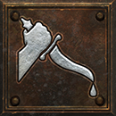
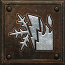
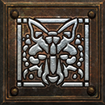
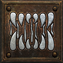
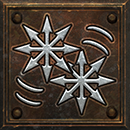
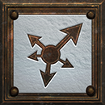

Reset your skills and stats with a Token of Absolution to try the changed skills.
Amazon
Every skill now goes to level 25. The five Remnants, one from each echo of the Descent, give the extra points.

Magic Arrow Buff
Bow and Crossbow · max level 25creates a magical arrow or bolt that does extra damage
Why this changed
Kindle, Frostbite, Heaven's Wrath, Arrowstorm, Hail, Deluge, Torrent, Squall, Flurry, Cloudburst, Salvo, Trueflight, Arrowfall, Windborne, Firmament, Forked Path, Pyre, Marrow, Gale, Fetor, Starbreak, Galeheart, Hundred Shafts, Undertow, The Unerring Flight, Askari Rimebow, Skovos Emberbow, Rogue's Keepsake, Vizjerei Lens, Viz-Jun's Last Spark, Censer of Zakarum, Storm Brood, The Unwritten Storm, The Bell of Bone, the Binding Blades, items of Multitudes and Black Oil with a Perfect Diamond carry +# to Projectiles, a stat projectile builds can stack. With none, the skill fires as before.

Fire Arrow Buff
Bow and Crossbow · max level 25magically enhances your arrows or bolts with fire
Why this changed
Kindle, Frostbite, Heaven's Wrath, Arrowstorm, Hail, Deluge, Torrent, Squall, Flurry, Cloudburst, Salvo, Trueflight, Arrowfall, Windborne, Firmament, Forked Path, Pyre, Marrow, Gale, Fetor, Starbreak, Galeheart, Hundred Shafts, Undertow, The Unerring Flight, Askari Rimebow, Skovos Emberbow, Rogue's Keepsake, Vizjerei Lens, Viz-Jun's Last Spark, Censer of Zakarum, Storm Brood, The Unwritten Storm, The Bell of Bone, the Binding Blades, items of Multitudes and Black Oil with a Perfect Diamond carry +# to Projectiles, a stat projectile builds can stack. With none, the skill fires as before.

Inner Sight Buff
Passive and Magic · max level 25illuminates nearby enemies making them easier to hit for you and your party
Why this changed
Solace, Mandate, Murmur, Herald, Standard, Warlord's Call, Far Cry, The Witch's Fletching, The Consecrated Shaft, Voice of the Ancients, Hand of Dominion, The Far Requiem, items of Reach or of Far Reach and Crimson Oil with a Perfect Skull carry a bonus to aura and curse radius. With none, the radius is as before. Treachery, Clamor, Mandate, Murmur, Herald, Whiteout, Fetor, Warlord's Call, Long Vigil, Far Cry, The Witch's Fletching, Voice of the Ancients, Hand of Dominion, The Unspent Oath, The Widow's Reproach, Lingering or Abiding items and Azure Oil with a Perfect Skull lengthen this skill. With none, it lasts as before.
Critical Strike Buff
Passive and Magic · max level 25passive - your attacks have a chance to do double damage
Why this changed
A slightly higher top chance to deal double damage.

Jab Buff
Javelin and Spear · max level 25attacks with a series of rapid thrusts using a javelin or spear class weapon
Why this changed
More damage from the first point and with each skill level, with Impale and Fend still adding damage; the Act II mercenary shares it, and monsters keep vanilla Jab.

Cold Arrow Buff
Bow and Crossbow · max level 25magically enhances your arrows or bolts by adding cold damage and a slowing effect cold arrows only do half of their regular damage
Why this changed
Kindle, Frostbite, Heaven's Wrath, Arrowstorm, Hail, Deluge, Torrent, Squall, Flurry, Cloudburst, Salvo, Trueflight, Arrowfall, Windborne, Firmament, Forked Path, Pyre, Marrow, Gale, Fetor, Starbreak, Galeheart, Hundred Shafts, Undertow, The Unerring Flight, Askari Rimebow, Skovos Emberbow, Rogue's Keepsake, Vizjerei Lens, Viz-Jun's Last Spark, Censer of Zakarum, Storm Brood, The Unwritten Storm, The Bell of Bone, the Binding Blades, items of Multitudes and Black Oil with a Perfect Diamond carry +# to Projectiles, a stat projectile builds can stack. With none, the skill fires as before.

Multiple Shot Buff
Bow and Crossbow · max level 25magically splits one arrow or bolt into many
Why this changed
More arrows past level 20, so points beyond the old cap still count. Kindle, Frostbite, Heaven's Wrath, Arrowstorm, Hail, Deluge, Torrent, Squall, Flurry, Cloudburst, Salvo, Trueflight, Arrowfall, Windborne, Firmament, Forked Path, Pyre, Marrow, Gale, Fetor, Starbreak, Galeheart, Hundred Shafts, Undertow, The Unerring Flight, Askari Rimebow, Skovos Emberbow, Rogue's Keepsake, Vizjerei Lens, Viz-Jun's Last Spark, Censer of Zakarum, Storm Brood, The Unwritten Storm, The Bell of Bone, the Binding Blades, items of Multitudes and Black Oil with a Perfect Diamond carry +# to Projectiles, a stat projectile builds can stack. With none, the skill fires as before.

Poison Javelin Buff
Javelin and Spear · max level 25magically enhances your javelin to leave a trail of poison clouds
Why this changed
Kindle, Frostbite, Heaven's Wrath, Arrowstorm, Hail, Deluge, Torrent, Squall, Flurry, Cloudburst, Salvo, Trueflight, Arrowfall, Windborne, Firmament, Forked Path, Pyre, Marrow, Gale, Fetor, Starbreak, Galeheart, Hundred Shafts, Undertow, The Unerring Flight, Askari Rimebow, Skovos Emberbow, Rogue's Keepsake, Vizjerei Lens, Viz-Jun's Last Spark, Censer of Zakarum, Storm Brood, The Unwritten Storm, The Bell of Bone, the Binding Blades, items of Multitudes and Black Oil with a Perfect Diamond carry +# to Projectiles, a stat projectile builds can stack. With none, the skill fires as before. Treachery, Clamor, Mandate, Murmur, Herald, Whiteout, Fetor, Warlord's Call, Long Vigil, Far Cry, The Witch's Fletching, Voice of the Ancients, Hand of Dominion, The Unspent Oath, The Widow's Reproach, Lingering or Abiding items and Azure Oil with a Perfect Skull lengthen this skill. With none, it lasts as before.

Exploding Arrow Buff
Bow and Crossbow · max level 25enchants an arrow or bolt that explodes on contact, damaging all nearby enemies
Why this changed
Kindle, Frostbite, Heaven's Wrath, Arrowstorm, Hail, Deluge, Torrent, Squall, Flurry, Cloudburst, Salvo, Trueflight, Arrowfall, Windborne, Firmament, Forked Path, Pyre, Marrow, Gale, Fetor, Starbreak, Galeheart, Hundred Shafts, Undertow, The Unerring Flight, Askari Rimebow, Skovos Emberbow, Rogue's Keepsake, Vizjerei Lens, Viz-Jun's Last Spark, Censer of Zakarum, Storm Brood, The Unwritten Storm, The Bell of Bone, the Binding Blades, items of Multitudes and Black Oil with a Perfect Diamond carry +# to Projectiles, a stat projectile builds can stack. With none, the skill fires as before.

Slow Missiles Buff
Passive and Magic · max level 25illuminates nearby enemies and slows their ranged attacks
Why this changed
Solace, Mandate, Murmur, Herald, Standard, Warlord's Call, Far Cry, The Witch's Fletching, The Consecrated Shaft, Voice of the Ancients, Hand of Dominion, The Far Requiem, items of Reach or of Far Reach and Crimson Oil with a Perfect Skull carry a bonus to aura and curse radius. With none, the radius is as before. Treachery, Clamor, Mandate, Murmur, Herald, Whiteout, Fetor, Warlord's Call, Long Vigil, Far Cry, The Witch's Fletching, Voice of the Ancients, Hand of Dominion, The Unspent Oath, The Widow's Reproach, Lingering or Abiding items and Azure Oil with a Perfect Skull lengthen this skill. With none, it lasts as before.

Impale Buff
Javelin and Spear · max level 25increases attack damage but rapidly degrades the weapon
Why this changed
More damage, at the first level and with every level after. Treachery, Clamor, Mandate, Murmur, Herald, Whiteout, Fetor, Warlord's Call, Long Vigil, Far Cry, The Witch's Fletching, Voice of the Ancients, Hand of Dominion, The Unspent Oath, The Widow's Reproach, Lingering or Abiding items and Azure Oil with a Perfect Skull lengthen this skill. With none, it lasts as before.

Lightning Bolt Buff
Javelin and Spear · max level 25magically converts your javelin into a bolt of lightning
Why this changed
Kindle, Frostbite, Heaven's Wrath, Arrowstorm, Hail, Deluge, Torrent, Squall, Flurry, Cloudburst, Salvo, Trueflight, Arrowfall, Windborne, Firmament, Forked Path, Pyre, Marrow, Gale, Fetor, Starbreak, Galeheart, Hundred Shafts, Undertow, The Unerring Flight, Askari Rimebow, Skovos Emberbow, Rogue's Keepsake, Vizjerei Lens, Viz-Jun's Last Spark, Censer of Zakarum, Storm Brood, The Unwritten Storm, The Bell of Bone, the Binding Blades, items of Multitudes and Black Oil with a Perfect Diamond carry +# to Projectiles, a stat projectile builds can stack. With none, the skill fires as before.

Ice Arrow Buff
Bow and Crossbow · max level 25magically enhances your arrow or bolt to freeze your enemies
Why this changed
Kindle, Frostbite, Heaven's Wrath, Arrowstorm, Hail, Deluge, Torrent, Squall, Flurry, Cloudburst, Salvo, Trueflight, Arrowfall, Windborne, Firmament, Forked Path, Pyre, Marrow, Gale, Fetor, Starbreak, Galeheart, Hundred Shafts, Undertow, The Unerring Flight, Askari Rimebow, Skovos Emberbow, Rogue's Keepsake, Vizjerei Lens, Viz-Jun's Last Spark, Censer of Zakarum, Storm Brood, The Unwritten Storm, The Bell of Bone, the Binding Blades, items of Multitudes and Black Oil with a Perfect Diamond carry +# to Projectiles, a stat projectile builds can stack. With none, the skill fires as before.
Penetrate Buff
Passive and Magic · max level 25passive - increases your attack rating
Why this changed
A bigger attack rating bonus.

Charged Strike Buff
Javelin and Spear · max level 25adds lightning damage to javelin and spear class weapons and releases charged bolts upon impact
Why this changed
Kindle, Frostbite, Heaven's Wrath, Arrowstorm, Hail, Deluge, Torrent, Squall, Flurry, Cloudburst, Salvo, Trueflight, Arrowfall, Windborne, Firmament, Forked Path, Pyre, Marrow, Gale, Fetor, Starbreak, Galeheart, Hundred Shafts, Undertow, The Unerring Flight, Askari Rimebow, Skovos Emberbow, Rogue's Keepsake, Vizjerei Lens, Viz-Jun's Last Spark, Censer of Zakarum, Storm Brood, The Unwritten Storm, The Bell of Bone, the Binding Blades, items of Multitudes and Black Oil with a Perfect Diamond carry +# to Projectiles, a stat projectile builds can stack. With none, the skill fires as before.

Plague Javelin Buff
Javelin and Spear · max level 25magically enhances your javelin to release expanding clouds of poison upon impact
Why this changed
Kindle, Frostbite, Heaven's Wrath, Arrowstorm, Hail, Deluge, Torrent, Squall, Flurry, Cloudburst, Salvo, Trueflight, Arrowfall, Windborne, Firmament, Forked Path, Pyre, Marrow, Gale, Fetor, Starbreak, Galeheart, Hundred Shafts, Undertow, The Unerring Flight, Askari Rimebow, Skovos Emberbow, Rogue's Keepsake, Vizjerei Lens, Viz-Jun's Last Spark, Censer of Zakarum, Storm Brood, The Unwritten Storm, The Bell of Bone, the Binding Blades, items of Multitudes and Black Oil with a Perfect Diamond carry +# to Projectiles, a stat projectile builds can stack. With none, the skill fires as before. Treachery, Clamor, Mandate, Murmur, Herald, Whiteout, Fetor, Warlord's Call, Long Vigil, Far Cry, The Witch's Fletching, Voice of the Ancients, Hand of Dominion, The Unspent Oath, The Widow's Reproach, Lingering or Abiding items and Azure Oil with a Perfect Skull lengthen this skill. With none, it lasts as before.

Strafe Buff
Bow and Crossbow · max level 25magically splits one arrow into several that target multiple nearby enemies
Why this changed
Kindle, Frostbite, Heaven's Wrath, Arrowstorm, Hail, Deluge, Torrent, Squall, Flurry, Cloudburst, Salvo, Trueflight, Arrowfall, Windborne, Firmament, Forked Path, Pyre, Marrow, Gale, Fetor, Starbreak, Galeheart, Hundred Shafts, Undertow, The Unerring Flight, Askari Rimebow, Skovos Emberbow, Rogue's Keepsake, Vizjerei Lens, Viz-Jun's Last Spark, Censer of Zakarum, Storm Brood, The Unwritten Storm, The Bell of Bone, the Binding Blades, items of Multitudes and Black Oil with a Perfect Diamond carry +# to Projectiles, a stat projectile builds can stack. With none, the skill fires as before. Heaven's Wrath, Black Death, Wildfire, Expanse, Windborne, Stormlash, Whiteout, Gale, Thousand Edges, Fetor, Galeheart, Hallow, Cinderwake, Thunder-Seer's Band, Voice of the Ancients, Censer of Zakarum, Ashwalker's Due, Sprawling items and Crimson Oil with a Perfect Amethyst carry a radius bonus for this skill. With none, the radius is as before.

Immolation Arrow Buff
Bow and Crossbow · max level 25enhances arrows or bolts to cause severe fire damage and creates a pyre upon impact
Why this changed
Kindle, Frostbite, Heaven's Wrath, Arrowstorm, Hail, Deluge, Torrent, Squall, Flurry, Cloudburst, Salvo, Trueflight, Arrowfall, Windborne, Firmament, Forked Path, Pyre, Marrow, Gale, Fetor, Starbreak, Galeheart, Hundred Shafts, Undertow, The Unerring Flight, Askari Rimebow, Skovos Emberbow, Rogue's Keepsake, Vizjerei Lens, Viz-Jun's Last Spark, Censer of Zakarum, Storm Brood, The Unwritten Storm, The Bell of Bone, the Binding Blades, items of Multitudes and Black Oil with a Perfect Diamond carry +# to Projectiles, a stat projectile builds can stack. With none, the skill fires as before. Treachery, Clamor, Mandate, Murmur, Herald, Whiteout, Fetor, Warlord's Call, Long Vigil, Far Cry, The Witch's Fletching, Voice of the Ancients, Hand of Dominion, The Unspent Oath, The Widow's Reproach, Lingering or Abiding items and Azure Oil with a Perfect Skull lengthen this skill. With none, it lasts as before.

Decoy Buff
Passive and Magic · max level 25creates a duplicate of yourself that draws fire from enemies
Why this changed
Tripwire, Dead March, Bone Throne, Mandate, Muster, Gravewarden, Wildbond, Shieldmaiden, Host of Hell, Kindred, Snarekeeper's Tread, The Unforgotten Sister, Marrowcall, The Engorged Codex, Pack-Mother's Hide, The Unbound Page, Brood of Embers, items of the Host and Black Oil with a Perfect Skull raise how many of these you keep. With none, the maximum is as before. Treachery, Clamor, Mandate, Murmur, Herald, Whiteout, Fetor, Warlord's Call, Long Vigil, Far Cry, The Witch's Fletching, Voice of the Ancients, Hand of Dominion, The Unspent Oath, The Widow's Reproach, Lingering or Abiding items and Azure Oil with a Perfect Skull lengthen this skill. With none, it lasts as before. Cortege of Briars, Cortege of Clay, Cortege of Bones, Cortege of Horns, Bone Throne, Mandate, Muster, Gravewarden, Wildbond, Shieldmaiden, Host of Hell, Marrowcall, The Engorged Codex, Pack-Mother's Hide, Sheltering, Preserving or Undying items and Azure Oil with a Perfect Skull carry Companion Vitality. With none, this skill works as before.

Fend Buff
Javelin and Spear · max level 25attacks all adjacent targets
Why this changed
Gains 10% damage per point spent in Jab; Repeated Attacks adds targets per sequence, not more hits against one enemy. Tripwire, Snare, Cadence, Anthem, Litany, Trapwright's Grips, Ardent Gauntlets, Ninefold Fang, Hratli's Steady Hands, items of Onslaught and Black Oil with a Perfect Sapphire add attacks to this sequence or shots to each sentry. With none, its count is as before.

Freezing Arrow Buff
Bow and Crossbow · max level 25magically enhances an arrow or bolt to freeze entire groups of monsters
Why this changed
Kindle, Frostbite, Heaven's Wrath, Arrowstorm, Hail, Deluge, Torrent, Squall, Flurry, Cloudburst, Salvo, Trueflight, Arrowfall, Windborne, Firmament, Forked Path, Pyre, Marrow, Gale, Fetor, Starbreak, Galeheart, Hundred Shafts, Undertow, The Unerring Flight, Askari Rimebow, Skovos Emberbow, Rogue's Keepsake, Vizjerei Lens, Viz-Jun's Last Spark, Censer of Zakarum, Storm Brood, The Unwritten Storm, The Bell of Bone, the Binding Blades, items of Multitudes and Black Oil with a Perfect Diamond carry +# to Projectiles, a stat projectile builds can stack. With none, the skill fires as before.

Valkyrie Buff
Passive and Magic · max level 25summons a powerful Valkyrie ally
Why this changed
Tripwire, Dead March, Bone Throne, Mandate, Muster, Gravewarden, Wildbond, Shieldmaiden, Host of Hell, Kindred, Snarekeeper's Tread, The Unforgotten Sister, Marrowcall, The Engorged Codex, Pack-Mother's Hide, The Unbound Page, Brood of Embers, items of the Host and Black Oil with a Perfect Skull raise how many of these you keep. With none, the maximum is as before. Cortege of Briars, Cortege of Clay, Cortege of Bones, Cortege of Horns, Bone Throne, Mandate, Muster, Gravewarden, Wildbond, Shieldmaiden, Host of Hell, Marrowcall, The Engorged Codex, Pack-Mother's Hide, Sheltering, Preserving or Undying items and Azure Oil with a Perfect Skull carry Companion Vitality. With none, this skill works as before.

Lightning Strike Buff
Javelin and Spear · max level 25adds lightning damage to javelin and spear class weapons and releases chain lightning upon impact
Why this changed
Heaven's Wrath, Black Death, Wildfire, Expanse, Windborne, Stormlash, Whiteout, Gale, Thousand Edges, Fetor, Galeheart, Hallow, Cinderwake, Thunder-Seer's Band, Voice of the Ancients, Censer of Zakarum, Ashwalker's Due, Sprawling items and Crimson Oil with a Perfect Amethyst carry a radius bonus for this skill. With none, the radius is as before. Thunderhead, Expanse, Stormlash, Forked Path, Aftershock, Skovos Stormtine, Thunder-Seer's Band, Fork of the Storm, items of Branching and Black Oil with a Perfect Topaz add hits to this skill. With none, it hits as before.

Lightning Fury Buff
Javelin and Spear · max level 25changes a thrown javelin into a powerful bolt of lightning that splits on impact
Why this changed
Kindle, Frostbite, Heaven's Wrath, Arrowstorm, Hail, Deluge, Torrent, Squall, Flurry, Cloudburst, Salvo, Trueflight, Arrowfall, Windborne, Firmament, Forked Path, Pyre, Marrow, Gale, Fetor, Starbreak, Galeheart, Hundred Shafts, Undertow, The Unerring Flight, Askari Rimebow, Skovos Emberbow, Rogue's Keepsake, Vizjerei Lens, Viz-Jun's Last Spark, Censer of Zakarum, Storm Brood, The Unwritten Storm, The Bell of Bone, the Binding Blades, items of Multitudes and Black Oil with a Perfect Diamond carry +# to Projectiles, a stat projectile builds can stack. With none, the skill fires as before. Heaven's Wrath, Black Death, Wildfire, Expanse, Windborne, Stormlash, Whiteout, Gale, Thousand Edges, Fetor, Galeheart, Hallow, Cinderwake, Thunder-Seer's Band, Voice of the Ancients, Censer of Zakarum, Ashwalker's Due, Sprawling items and Crimson Oil with a Perfect Amethyst carry a radius bonus for this skill. With none, the radius is as before.
Sorceress
Every skill now goes to level 25. The five Remnants, one from each echo of the Descent, give the extra points.

Fire Bolt Buff
Fire Spells · max level 25creates a magical flaming missile
Why this changed
Kindle, Frostbite, Heaven's Wrath, Arrowstorm, Hail, Deluge, Torrent, Squall, Flurry, Cloudburst, Salvo, Trueflight, Arrowfall, Windborne, Firmament, Forked Path, Pyre, Marrow, Gale, Fetor, Starbreak, Galeheart, Hundred Shafts, Undertow, The Unerring Flight, Askari Rimebow, Skovos Emberbow, Rogue's Keepsake, Vizjerei Lens, Viz-Jun's Last Spark, Censer of Zakarum, Storm Brood, The Unwritten Storm, The Bell of Bone, the Binding Blades, items of Multitudes and Black Oil with a Perfect Diamond carry +# to Projectiles, a stat projectile builds can stack. With none, the skill fires as before.

Charged Bolt Buff
Lightning Spells · max level 25creates multiple, randomly directed bolts of electrical energy
Why this changed
More bolts past level 20, and more damage from each point in Lightning. Kindle, Frostbite, Heaven's Wrath, Arrowstorm, Hail, Deluge, Torrent, Squall, Flurry, Cloudburst, Salvo, Trueflight, Arrowfall, Windborne, Firmament, Forked Path, Pyre, Marrow, Gale, Fetor, Starbreak, Galeheart, Hundred Shafts, Undertow, The Unerring Flight, Askari Rimebow, Skovos Emberbow, Rogue's Keepsake, Vizjerei Lens, Viz-Jun's Last Spark, Censer of Zakarum, Storm Brood, The Unwritten Storm, The Bell of Bone, the Binding Blades, items of Multitudes and Black Oil with a Perfect Diamond carry +# to Projectiles, a stat projectile builds can stack. With none, the skill fires as before.

Ice Bolt Buff
Cold Spells · max level 25creates a magical bolt of ice that damages and slows your enemies
Why this changed
Kindle, Frostbite, Heaven's Wrath, Arrowstorm, Hail, Deluge, Torrent, Squall, Flurry, Cloudburst, Salvo, Trueflight, Arrowfall, Windborne, Firmament, Forked Path, Pyre, Marrow, Gale, Fetor, Starbreak, Galeheart, Hundred Shafts, Undertow, The Unerring Flight, Askari Rimebow, Skovos Emberbow, Rogue's Keepsake, Vizjerei Lens, Viz-Jun's Last Spark, Censer of Zakarum, Storm Brood, The Unwritten Storm, The Bell of Bone, the Binding Blades, items of Multitudes and Black Oil with a Perfect Diamond carry +# to Projectiles, a stat projectile builds can stack. With none, the skill fires as before.

Frozen Armor Buff
Cold Spells · max level 25increases your defense and freezes enemies that hit you
Why this changed
Treachery, Clamor, Mandate, Murmur, Herald, Whiteout, Fetor, Warlord's Call, Long Vigil, Far Cry, The Witch's Fletching, Voice of the Ancients, Hand of Dominion, The Unspent Oath, The Widow's Reproach, Lingering or Abiding items and Azure Oil with a Perfect Skull lengthen this skill. With none, it lasts as before.

Inferno Buff
Fire Spells · max level 25creates a continuous jet of flame to scorch your enemies
Why this changed
Heaven's Wrath, Black Death, Wildfire, Expanse, Windborne, Stormlash, Whiteout, Gale, Thousand Edges, Fetor, Galeheart, Hallow, Cinderwake, Thunder-Seer's Band, Voice of the Ancients, Censer of Zakarum, Ashwalker's Due, Sprawling items and Crimson Oil with a Perfect Amethyst carry a radius bonus for this skill. With none, the radius is as before.

Static Field Buff
Lightning Spells · max level 25creates an electrical field that reduces life of all nearby enemies
Why this changed
Heaven's Wrath, Black Death, Wildfire, Expanse, Windborne, Stormlash, Whiteout, Gale, Thousand Edges, Fetor, Galeheart, Hallow, Cinderwake, Thunder-Seer's Band, Voice of the Ancients, Censer of Zakarum, Ashwalker's Due, Sprawling items and Crimson Oil with a Perfect Amethyst carry a radius bonus for this skill. With none, the radius is as before.

Frost Nova Buff
Cold Spells · max level 25creates an expanding ring of ice that damages and slows all nearby enemies
Why this changed
Area Radius items make its ring last longer; the tooltip shows how long the ring travels. Heaven's Wrath, Black Death, Wildfire, Expanse, Windborne, Stormlash, Whiteout, Gale, Thousand Edges, Fetor, Galeheart, Hallow, Cinderwake, Thunder-Seer's Band, Voice of the Ancients, Censer of Zakarum, Ashwalker's Due, Sprawling items and Crimson Oil with a Perfect Amethyst carry a radius bonus for this skill. With none, the radius is as before.

Ice Blast Buff
Cold Spells · max level 25creates a magical sphere of ice that damages and freezes your enemy
Why this changed
Kindle, Frostbite, Heaven's Wrath, Arrowstorm, Hail, Deluge, Torrent, Squall, Flurry, Cloudburst, Salvo, Trueflight, Arrowfall, Windborne, Firmament, Forked Path, Pyre, Marrow, Gale, Fetor, Starbreak, Galeheart, Hundred Shafts, Undertow, The Unerring Flight, Askari Rimebow, Skovos Emberbow, Rogue's Keepsake, Vizjerei Lens, Viz-Jun's Last Spark, Censer of Zakarum, Storm Brood, The Unwritten Storm, The Bell of Bone, the Binding Blades, items of Multitudes and Black Oil with a Perfect Diamond carry +# to Projectiles, a stat projectile builds can stack. With none, the skill fires as before.

Blaze Buff
Fire Spells · max level 25creates a wall of fire in your wake to scorch your enemies
Why this changed
Treachery, Clamor, Mandate, Murmur, Herald, Whiteout, Fetor, Warlord's Call, Long Vigil, Far Cry, The Witch's Fletching, Voice of the Ancients, Hand of Dominion, The Unspent Oath, The Widow's Reproach, Lingering or Abiding items and Azure Oil with a Perfect Skull lengthen this skill. With none, it lasts as before.

Fire Ball Buff
Fire Spells · max level 25creates an explosive sphere of fiery death to engulf your enemies
Why this changed
Kindle, Frostbite, Heaven's Wrath, Arrowstorm, Hail, Deluge, Torrent, Squall, Flurry, Cloudburst, Salvo, Trueflight, Arrowfall, Windborne, Firmament, Forked Path, Pyre, Marrow, Gale, Fetor, Starbreak, Galeheart, Hundred Shafts, Undertow, The Unerring Flight, Askari Rimebow, Skovos Emberbow, Rogue's Keepsake, Vizjerei Lens, Viz-Jun's Last Spark, Censer of Zakarum, Storm Brood, The Unwritten Storm, The Bell of Bone, the Binding Blades, items of Multitudes and Black Oil with a Perfect Diamond carry +# to Projectiles, a stat projectile builds can stack. With none, the skill fires as before.

Nova Buff
Lightning Spells · max level 25creates an expanding ring of lightning to shock nearby enemies
Why this changed
More lightning damage at the top, and more from each point in Static Field. Heaven's Wrath, Black Death, Wildfire, Expanse, Windborne, Stormlash, Whiteout, Gale, Thousand Edges, Fetor, Galeheart, Hallow, Cinderwake, Thunder-Seer's Band, Voice of the Ancients, Censer of Zakarum, Ashwalker's Due, Sprawling items and Crimson Oil with a Perfect Amethyst carry a radius bonus for this skill. With none, the radius is as before.

Lightning Buff
Lightning Spells · max level 25creates a powerful lightning bolt to lay waste to your enemies
Why this changed
Kindle, Frostbite, Heaven's Wrath, Arrowstorm, Hail, Deluge, Torrent, Squall, Flurry, Cloudburst, Salvo, Trueflight, Arrowfall, Windborne, Firmament, Forked Path, Pyre, Marrow, Gale, Fetor, Starbreak, Galeheart, Hundred Shafts, Undertow, The Unerring Flight, Askari Rimebow, Skovos Emberbow, Rogue's Keepsake, Vizjerei Lens, Viz-Jun's Last Spark, Censer of Zakarum, Storm Brood, The Unwritten Storm, The Bell of Bone, the Binding Blades, items of Multitudes and Black Oil with a Perfect Diamond carry +# to Projectiles, a stat projectile builds can stack. With none, the skill fires as before.

Shiver Armor Buff
Cold Spells · max level 25increases your defense freezes and damages enemies that hit you
Why this changed
Treachery, Clamor, Mandate, Murmur, Herald, Whiteout, Fetor, Warlord's Call, Long Vigil, Far Cry, The Witch's Fletching, Voice of the Ancients, Hand of Dominion, The Unspent Oath, The Widow's Reproach, Lingering or Abiding items and Azure Oil with a Perfect Skull lengthen this skill. With none, it lasts as before.

Fire Wall Buff
Fire Spells · max level 25creates a wall of flame that burns nearby enemies
Why this changed
Fixes a mistake in the game's own table that spoiled the bonus from Warmth and Inferno. Treachery, Clamor, Mandate, Murmur, Herald, Whiteout, Fetor, Warlord's Call, Long Vigil, Far Cry, The Witch's Fletching, Voice of the Ancients, Hand of Dominion, The Unspent Oath, The Widow's Reproach, Lingering or Abiding items and Azure Oil with a Perfect Skull lengthen this skill. With none, it lasts as before.

Enchant Buff
Fire Spells · max level 25enchants equipped weapon of targeted character or minion adds fire damage to all weapons
Why this changed
Treachery, Clamor, Mandate, Murmur, Herald, Whiteout, Fetor, Warlord's Call, Long Vigil, Far Cry, The Witch's Fletching, Voice of the Ancients, Hand of Dominion, The Unspent Oath, The Widow's Reproach, Lingering or Abiding items and Azure Oil with a Perfect Skull lengthen this skill. With none, it lasts as before.

Chain Lightning Buff
Lightning Spells · max level 25creates a bolt of lightning that arcs through several targets
Why this changed
Gains as much from its synergies as Lightning does. Heaven's Wrath, Black Death, Wildfire, Expanse, Windborne, Stormlash, Whiteout, Gale, Thousand Edges, Fetor, Galeheart, Hallow, Cinderwake, Thunder-Seer's Band, Voice of the Ancients, Censer of Zakarum, Ashwalker's Due, Sprawling items and Crimson Oil with a Perfect Amethyst carry a radius bonus for this skill. With none, the radius is as before. Thunderhead, Expanse, Stormlash, Forked Path, Aftershock, Skovos Stormtine, Thunder-Seer's Band, Fork of the Storm, items of Branching and Black Oil with a Perfect Topaz add hits to this skill. With none, it hits as before.

Glacial Spike Buff
Cold Spells · max level 25creates a magical ice comet that freezes or kills nearby enemies
Why this changed
Kindle, Frostbite, Heaven's Wrath, Arrowstorm, Hail, Deluge, Torrent, Squall, Flurry, Cloudburst, Salvo, Trueflight, Arrowfall, Windborne, Firmament, Forked Path, Pyre, Marrow, Gale, Fetor, Starbreak, Galeheart, Hundred Shafts, Undertow, The Unerring Flight, Askari Rimebow, Skovos Emberbow, Rogue's Keepsake, Vizjerei Lens, Viz-Jun's Last Spark, Censer of Zakarum, Storm Brood, The Unwritten Storm, The Bell of Bone, the Binding Blades, items of Multitudes and Black Oil with a Perfect Diamond carry +# to Projectiles, a stat projectile builds can stack. With none, the skill fires as before. Heaven's Wrath, Black Death, Wildfire, Expanse, Windborne, Stormlash, Whiteout, Gale, Thousand Edges, Fetor, Galeheart, Hallow, Cinderwake, Thunder-Seer's Band, Voice of the Ancients, Censer of Zakarum, Ashwalker's Due, Sprawling items and Crimson Oil with a Perfect Amethyst carry a radius bonus for this skill. With none, the radius is as before.

Meteor Buff
Fire Spells · max level 25summons a meteor from the heavens to crush and incinerate your enemies
Why this changed
Heaven's Wrath, Black Death, Wildfire, Expanse, Windborne, Stormlash, Whiteout, Gale, Thousand Edges, Fetor, Galeheart, Hallow, Cinderwake, Thunder-Seer's Band, Voice of the Ancients, Censer of Zakarum, Ashwalker's Due, Sprawling items and Crimson Oil with a Perfect Amethyst carry a radius bonus for this skill. With none, the radius is as before.

Thunder Storm Buff
Lightning Spells · max level 25summons a deadly thunderstorm that strikes your enemies with bolts of lightning
Why this changed
Gains more from each point in Static Field. Treachery, Clamor, Mandate, Murmur, Herald, Whiteout, Fetor, Warlord's Call, Long Vigil, Far Cry, The Witch's Fletching, Voice of the Ancients, Hand of Dominion, The Unspent Oath, The Widow's Reproach, Lingering or Abiding items and Azure Oil with a Perfect Skull lengthen this skill. With none, it lasts as before. Thunderhead, Tolling, Anthem, Thousand Edges, Thunder-Seer's Band, Crown of the Vigil, Bulwark of Devotion, Gauntlets of Penance, Pilgrim's Last Road, Quickening, Unrelenting or Ceaseless items and Crimson Oil with a Perfect Skull carry Faster Pulse Rate. With none, this skill works as before.

Energy Shield Buff
Lightning Spells · max level 25creates a magical shield that consumes mana instead of health when you take damage
Why this changed
Treachery, Clamor, Mandate, Murmur, Herald, Whiteout, Fetor, Warlord's Call, Long Vigil, Far Cry, The Witch's Fletching, Voice of the Ancients, Hand of Dominion, The Unspent Oath, The Widow's Reproach, Lingering or Abiding items and Azure Oil with a Perfect Skull lengthen this skill. With none, it lasts as before.

Blizzard Buff
Cold Spells · max level 25summons massive shards of ice to destroy your enemies
Why this changed
Area and duration gear still improve the storm; Faster Pulse Rate no longer speeds up its shards. Heaven's Wrath, Black Death, Wildfire, Expanse, Windborne, Stormlash, Whiteout, Gale, Thousand Edges, Fetor, Galeheart, Hallow, Cinderwake, Thunder-Seer's Band, Voice of the Ancients, Censer of Zakarum, Ashwalker's Due, Sprawling items and Crimson Oil with a Perfect Amethyst carry a radius bonus for this skill. With none, the radius is as before. Treachery, Clamor, Mandate, Murmur, Herald, Whiteout, Fetor, Warlord's Call, Long Vigil, Far Cry, The Witch's Fletching, Voice of the Ancients, Hand of Dominion, The Unspent Oath, The Widow's Reproach, Lingering or Abiding items and Azure Oil with a Perfect Skull lengthen this skill. With none, it lasts as before.

Chilling Armor Buff
Cold Spells · max level 25increases defense and discharges an ice bolt in retaliation against ranged attackers
Why this changed
Treachery, Clamor, Mandate, Murmur, Herald, Whiteout, Fetor, Warlord's Call, Long Vigil, Far Cry, The Witch's Fletching, Voice of the Ancients, Hand of Dominion, The Unspent Oath, The Widow's Reproach, Lingering or Abiding items and Azure Oil with a Perfect Skull lengthen this skill. With none, it lasts as before.

Hydra Buff
Fire Spells · max level 25summons a multi-headed beast of flame to reduce your enemies to ashes
Why this changed
Tripwire, Dead March, Bone Throne, Mandate, Muster, Gravewarden, Wildbond, Shieldmaiden, Host of Hell, Kindred, Snarekeeper's Tread, The Unforgotten Sister, Marrowcall, The Engorged Codex, Pack-Mother's Hide, The Unbound Page, Brood of Embers, items of the Host and Black Oil with a Perfect Skull raise how many of these you keep. With none, the maximum is as before. Treachery, Clamor, Mandate, Murmur, Herald, Whiteout, Fetor, Warlord's Call, Long Vigil, Far Cry, The Witch's Fletching, Voice of the Ancients, Hand of Dominion, The Unspent Oath, The Widow's Reproach, Lingering or Abiding items and Azure Oil with a Perfect Skull lengthen this skill. With none, it lasts as before.

Frozen Orb Buff
Cold Spells · max level 25creates a magical globe that sprays a torrent of ice bolts to lay waste to your enemies
Why this changed
Items add at most two extra orbs; Volley Weight still adds damage to the shared volley. Kindle, Frostbite, Heaven's Wrath, Arrowstorm, Hail, Deluge, Torrent, Squall, Flurry, Cloudburst, Salvo, Trueflight, Arrowfall, Windborne, Firmament, Forked Path, Pyre, Marrow, Gale, Fetor, Starbreak, Galeheart, Hundred Shafts, Undertow, The Unerring Flight, Askari Rimebow, Skovos Emberbow, Rogue's Keepsake, Vizjerei Lens, Viz-Jun's Last Spark, Censer of Zakarum, Storm Brood, The Unwritten Storm, The Bell of Bone, the Binding Blades, items of Multitudes and Black Oil with a Perfect Diamond carry +# to Projectiles, a stat projectile builds can stack. With none, the skill fires as before.
Necromancer
Every skill now goes to level 25. The five Remnants, one from each echo of the Descent, give the extra points.

Amplify Damage Buff
Curses · max level 25curses a group of enemies, increasing the non-magic damage they receive
Why this changed
Solace, Mandate, Murmur, Herald, Standard, Warlord's Call, Far Cry, The Witch's Fletching, The Consecrated Shaft, Voice of the Ancients, Hand of Dominion, The Far Requiem, items of Reach or of Far Reach and Crimson Oil with a Perfect Skull carry a bonus to aura and curse radius. With none, the radius is as before. Treachery, Clamor, Mandate, Murmur, Herald, Whiteout, Fetor, Warlord's Call, Long Vigil, Far Cry, The Witch's Fletching, Voice of the Ancients, Hand of Dominion, The Unspent Oath, The Widow's Reproach, Lingering or Abiding items and Azure Oil with a Perfect Skull lengthen this skill. With none, it lasts as before.

Teeth Buff
Poison and Bone · max level 25fires a barrage of summoned barbed teeth
Why this changed
More teeth past level 20, so points beyond the old cap still count. Kindle, Frostbite, Heaven's Wrath, Arrowstorm, Hail, Deluge, Torrent, Squall, Flurry, Cloudburst, Salvo, Trueflight, Arrowfall, Windborne, Firmament, Forked Path, Pyre, Marrow, Gale, Fetor, Starbreak, Galeheart, Hundred Shafts, Undertow, The Unerring Flight, Askari Rimebow, Skovos Emberbow, Rogue's Keepsake, Vizjerei Lens, Viz-Jun's Last Spark, Censer of Zakarum, Storm Brood, The Unwritten Storm, The Bell of Bone, the Binding Blades, items of Multitudes and Black Oil with a Perfect Diamond carry +# to Projectiles, a stat projectile builds can stack. With none, the skill fires as before.

Raise Skeleton Buff
Summoning · max level 25cast on the corpse of a slain monster, this raises a skeleton warrior that fights for you
Why this changed
Skeletons gain more damage with every level. Tripwire, Dead March, Bone Throne, Mandate, Muster, Gravewarden, Wildbond, Shieldmaiden, Host of Hell, Kindred, Snarekeeper's Tread, The Unforgotten Sister, Marrowcall, The Engorged Codex, Pack-Mother's Hide, The Unbound Page, Brood of Embers, items of the Host and Black Oil with a Perfect Skull raise how many of these you keep. With none, the maximum is as before. Cortege of Briars, Cortege of Clay, Cortege of Bones, Cortege of Horns, Bone Throne, Mandate, Muster, Gravewarden, Wildbond, Shieldmaiden, Host of Hell, Marrowcall, The Engorged Codex, Pack-Mother's Hide, Sheltering, Preserving or Undying items and Azure Oil with a Perfect Skull carry Companion Vitality. With none, this skill works as before.

Dim Vision Buff
Curses · max level 25curses a group of monsters, reducing their vision radius
Why this changed
Solace, Mandate, Murmur, Herald, Standard, Warlord's Call, Far Cry, The Witch's Fletching, The Consecrated Shaft, Voice of the Ancients, Hand of Dominion, The Far Requiem, items of Reach or of Far Reach and Crimson Oil with a Perfect Skull carry a bonus to aura and curse radius. With none, the radius is as before. Treachery, Clamor, Mandate, Murmur, Herald, Whiteout, Fetor, Warlord's Call, Long Vigil, Far Cry, The Witch's Fletching, Voice of the Ancients, Hand of Dominion, The Unspent Oath, The Widow's Reproach, Lingering or Abiding items and Azure Oil with a Perfect Skull lengthen this skill. With none, it lasts as before.

Weaken Buff
Curses · max level 25curses a group of enemies, reducing the amount of damage they inflict
Why this changed
Solace, Mandate, Murmur, Herald, Standard, Warlord's Call, Far Cry, The Witch's Fletching, The Consecrated Shaft, Voice of the Ancients, Hand of Dominion, The Far Requiem, items of Reach or of Far Reach and Crimson Oil with a Perfect Skull carry a bonus to aura and curse radius. With none, the radius is as before. Treachery, Clamor, Mandate, Murmur, Herald, Whiteout, Fetor, Warlord's Call, Long Vigil, Far Cry, The Witch's Fletching, Voice of the Ancients, Hand of Dominion, The Unspent Oath, The Widow's Reproach, Lingering or Abiding items and Azure Oil with a Perfect Skull lengthen this skill. With none, it lasts as before.

Poison Dagger Buff
Poison and Bone · max level 25adds poison to your dagger attacks
Why this changed
Its mana cost no longer rises with level, the same as Poison Explosion.

Corpse Explosion Buff
Poison and Bone · max level 25cast on the corpse of a slain monster, it explodes, damaging nearby enemies
Why this changed
Heaven's Wrath, Black Death, Wildfire, Expanse, Windborne, Stormlash, Whiteout, Gale, Thousand Edges, Fetor, Galeheart, Hallow, Cinderwake, Thunder-Seer's Band, Voice of the Ancients, Censer of Zakarum, Ashwalker's Due, Sprawling items and Crimson Oil with a Perfect Amethyst carry a radius bonus for this skill. With none, the radius is as before.

Clay Golem Buff
Summoning · max level 25creates a golem from the earth to fight by your side
Why this changed
Tripwire, Dead March, Bone Throne, Mandate, Muster, Gravewarden, Wildbond, Shieldmaiden, Host of Hell, Kindred, Snarekeeper's Tread, The Unforgotten Sister, Marrowcall, The Engorged Codex, Pack-Mother's Hide, The Unbound Page, Brood of Embers, items of the Host and Black Oil with a Perfect Skull raise how many of these you keep. With none, the maximum is as before. Cortege of Briars, Cortege of Clay, Cortege of Bones, Cortege of Horns, Bone Throne, Mandate, Muster, Gravewarden, Wildbond, Shieldmaiden, Host of Hell, Marrowcall, The Engorged Codex, Pack-Mother's Hide, Sheltering, Preserving or Undying items and Azure Oil with a Perfect Skull carry Companion Vitality. With none, this skill works as before.

Iron Maiden Buff
Curses · max level 25curses a group of enemies, causing them to damage themselves when damaging others
Why this changed
Solace, Mandate, Murmur, Herald, Standard, Warlord's Call, Far Cry, The Witch's Fletching, The Consecrated Shaft, Voice of the Ancients, Hand of Dominion, The Far Requiem, items of Reach or of Far Reach and Crimson Oil with a Perfect Skull carry a bonus to aura and curse radius. With none, the radius is as before. Treachery, Clamor, Mandate, Murmur, Herald, Whiteout, Fetor, Warlord's Call, Long Vigil, Far Cry, The Witch's Fletching, Voice of the Ancients, Hand of Dominion, The Unspent Oath, The Widow's Reproach, Lingering or Abiding items and Azure Oil with a Perfect Skull lengthen this skill. With none, it lasts as before.

Terror Buff
Curses · max level 25curses a group of monsters, causing them to flee in terror
Why this changed
Solace, Mandate, Murmur, Herald, Standard, Warlord's Call, Far Cry, The Witch's Fletching, The Consecrated Shaft, Voice of the Ancients, Hand of Dominion, The Far Requiem, items of Reach or of Far Reach and Crimson Oil with a Perfect Skull carry a bonus to aura and curse radius. With none, the radius is as before. Treachery, Clamor, Mandate, Murmur, Herald, Whiteout, Fetor, Warlord's Call, Long Vigil, Far Cry, The Witch's Fletching, Voice of the Ancients, Hand of Dominion, The Unspent Oath, The Widow's Reproach, Lingering or Abiding items and Azure Oil with a Perfect Skull lengthen this skill. With none, it lasts as before.

Raise Skeletal Mage Buff
Summoning · max level 25cast on the corpse of a slain monster, this raises a skeleton mage that fights for you
Why this changed
Tripwire, Dead March, Bone Throne, Mandate, Muster, Gravewarden, Wildbond, Shieldmaiden, Host of Hell, Kindred, Snarekeeper's Tread, The Unforgotten Sister, Marrowcall, The Engorged Codex, Pack-Mother's Hide, The Unbound Page, Brood of Embers, items of the Host and Black Oil with a Perfect Skull raise how many of these you keep. With none, the maximum is as before. Cortege of Briars, Cortege of Clay, Cortege of Bones, Cortege of Horns, Bone Throne, Mandate, Muster, Gravewarden, Wildbond, Shieldmaiden, Host of Hell, Marrowcall, The Engorged Codex, Pack-Mother's Hide, Sheltering, Preserving or Undying items and Azure Oil with a Perfect Skull carry Companion Vitality. With none, this skill works as before.

Confuse Buff
Curses · max level 25curses a monster to force it to attack random targets
Why this changed
Solace, Mandate, Murmur, Herald, Standard, Warlord's Call, Far Cry, The Witch's Fletching, The Consecrated Shaft, Voice of the Ancients, Hand of Dominion, The Far Requiem, items of Reach or of Far Reach and Crimson Oil with a Perfect Skull carry a bonus to aura and curse radius. With none, the radius is as before. Treachery, Clamor, Mandate, Murmur, Herald, Whiteout, Fetor, Warlord's Call, Long Vigil, Far Cry, The Witch's Fletching, Voice of the Ancients, Hand of Dominion, The Unspent Oath, The Widow's Reproach, Lingering or Abiding items and Azure Oil with a Perfect Skull lengthen this skill. With none, it lasts as before.

Life Tap Buff
Curses · max level 25curses a group of monsters so that damaging them gives the attacker life
Why this changed
Solace, Mandate, Murmur, Herald, Standard, Warlord's Call, Far Cry, The Witch's Fletching, The Consecrated Shaft, Voice of the Ancients, Hand of Dominion, The Far Requiem, items of Reach or of Far Reach and Crimson Oil with a Perfect Skull carry a bonus to aura and curse radius. With none, the radius is as before. Treachery, Clamor, Mandate, Murmur, Herald, Whiteout, Fetor, Warlord's Call, Long Vigil, Far Cry, The Witch's Fletching, Voice of the Ancients, Hand of Dominion, The Unspent Oath, The Widow's Reproach, Lingering or Abiding items and Azure Oil with a Perfect Skull lengthen this skill. With none, it lasts as before.

Poison Explosion Buff
Poison and Bone · max level 25cast on the corpse of a slain monster, toxic gas is released that poisons nearby monsters
Why this changed
Gains more from points in Poison Dagger and Poison Nova. Heaven's Wrath, Black Death, Wildfire, Expanse, Windborne, Stormlash, Whiteout, Gale, Thousand Edges, Fetor, Galeheart, Hallow, Cinderwake, Thunder-Seer's Band, Voice of the Ancients, Censer of Zakarum, Ashwalker's Due, Sprawling items and Crimson Oil with a Perfect Amethyst carry a radius bonus for this skill. With none, the radius is as before.

Bone Spear Buff
Poison and Bone · max level 25summons a deadly spike of bone to impale your enemies
Why this changed
Cheaper to cast, and gains as much from the other bone skills as Bone Spirit does. Kindle, Frostbite, Heaven's Wrath, Arrowstorm, Hail, Deluge, Torrent, Squall, Flurry, Cloudburst, Salvo, Trueflight, Arrowfall, Windborne, Firmament, Forked Path, Pyre, Marrow, Gale, Fetor, Starbreak, Galeheart, Hundred Shafts, Undertow, The Unerring Flight, Askari Rimebow, Skovos Emberbow, Rogue's Keepsake, Vizjerei Lens, Viz-Jun's Last Spark, Censer of Zakarum, Storm Brood, The Unwritten Storm, The Bell of Bone, the Binding Blades, items of Multitudes and Black Oil with a Perfect Diamond carry +# to Projectiles, a stat projectile builds can stack. With none, the skill fires as before.

Blood Golem Buff
Summoning · max level 25creates a golem that shares with you the life it steals
Why this changed
Tripwire, Dead March, Bone Throne, Mandate, Muster, Gravewarden, Wildbond, Shieldmaiden, Host of Hell, Kindred, Snarekeeper's Tread, The Unforgotten Sister, Marrowcall, The Engorged Codex, Pack-Mother's Hide, The Unbound Page, Brood of Embers, items of the Host and Black Oil with a Perfect Skull raise how many of these you keep. With none, the maximum is as before. Cortege of Briars, Cortege of Clay, Cortege of Bones, Cortege of Horns, Bone Throne, Mandate, Muster, Gravewarden, Wildbond, Shieldmaiden, Host of Hell, Marrowcall, The Engorged Codex, Pack-Mother's Hide, Sheltering, Preserving or Undying items and Azure Oil with a Perfect Skull carry Companion Vitality. With none, this skill works as before.

Attract Buff
Curses · max level 25curses a monster to become the target of all nearby monsters this curse may not be overridden by another curse
Why this changed
Solace, Mandate, Murmur, Herald, Standard, Warlord's Call, Far Cry, The Witch's Fletching, The Consecrated Shaft, Voice of the Ancients, Hand of Dominion, The Far Requiem, items of Reach or of Far Reach and Crimson Oil with a Perfect Skull carry a bonus to aura and curse radius. With none, the radius is as before. Treachery, Clamor, Mandate, Murmur, Herald, Whiteout, Fetor, Warlord's Call, Long Vigil, Far Cry, The Witch's Fletching, Voice of the Ancients, Hand of Dominion, The Unspent Oath, The Widow's Reproach, Lingering or Abiding items and Azure Oil with a Perfect Skull lengthen this skill. With none, it lasts as before.

Decrepify Buff
Curses · max level 25curses a group of enemies to make them slow, weak and take amplified damage
Why this changed
Solace, Mandate, Murmur, Herald, Standard, Warlord's Call, Far Cry, The Witch's Fletching, The Consecrated Shaft, Voice of the Ancients, Hand of Dominion, The Far Requiem, items of Reach or of Far Reach and Crimson Oil with a Perfect Skull carry a bonus to aura and curse radius. With none, the radius is as before. Treachery, Clamor, Mandate, Murmur, Herald, Whiteout, Fetor, Warlord's Call, Long Vigil, Far Cry, The Witch's Fletching, Voice of the Ancients, Hand of Dominion, The Unspent Oath, The Widow's Reproach, Lingering or Abiding items and Azure Oil with a Perfect Skull lengthen this skill. With none, it lasts as before.

Iron Golem Buff
Summoning · max level 25transforms a metallic item into a golem that gains the properties of the item
Why this changed
Tripwire, Dead March, Bone Throne, Mandate, Muster, Gravewarden, Wildbond, Shieldmaiden, Host of Hell, Kindred, Snarekeeper's Tread, The Unforgotten Sister, Marrowcall, The Engorged Codex, Pack-Mother's Hide, The Unbound Page, Brood of Embers, items of the Host and Black Oil with a Perfect Skull raise how many of these you keep. With none, the maximum is as before. Cortege of Briars, Cortege of Clay, Cortege of Bones, Cortege of Horns, Bone Throne, Mandate, Muster, Gravewarden, Wildbond, Shieldmaiden, Host of Hell, Marrowcall, The Engorged Codex, Pack-Mother's Hide, Sheltering, Preserving or Undying items and Azure Oil with a Perfect Skull carry Companion Vitality. With none, this skill works as before.

Lower Resist Buff
Curses · max level 25curses an enemy to take more damage from all magical attacks lowers resistances of monsters lowers maximum resistances of hostile players
Why this changed
Solace, Mandate, Murmur, Herald, Standard, Warlord's Call, Far Cry, The Witch's Fletching, The Consecrated Shaft, Voice of the Ancients, Hand of Dominion, The Far Requiem, items of Reach or of Far Reach and Crimson Oil with a Perfect Skull carry a bonus to aura and curse radius. With none, the radius is as before. Treachery, Clamor, Mandate, Murmur, Herald, Whiteout, Fetor, Warlord's Call, Long Vigil, Far Cry, The Witch's Fletching, Voice of the Ancients, Hand of Dominion, The Unspent Oath, The Widow's Reproach, Lingering or Abiding items and Azure Oil with a Perfect Skull lengthen this skill. With none, it lasts as before.

Poison Nova Buff
Poison and Bone · max level 25emits an expanding ring of concentrated poison
Why this changed
Lower mana cost per cast. Heaven's Wrath, Black Death, Wildfire, Expanse, Windborne, Stormlash, Whiteout, Gale, Thousand Edges, Fetor, Galeheart, Hallow, Cinderwake, Thunder-Seer's Band, Voice of the Ancients, Censer of Zakarum, Ashwalker's Due, Sprawling items and Crimson Oil with a Perfect Amethyst carry a radius bonus for this skill. With none, the radius is as before.
Bone Spirit Buff
Poison and Bone · max level 25releases a spirit of the restless undead that tracks its target or finds one of its own
Why this changed
Cheaper to cast, and more damage from each point in the other bone skills.

Fire Golem Buff
Summoning · max level 25creates a golem that converts the damage it receives from fire into life
Why this changed
Its Holy Fire aura keeps growing to level 25. Solace, Mandate, Murmur, Herald, Standard, Warlord's Call, Far Cry, The Witch's Fletching, The Consecrated Shaft, Voice of the Ancients, Hand of Dominion, The Far Requiem, items of Reach or of Far Reach and Crimson Oil with a Perfect Skull carry a bonus to aura and curse radius. With none, the radius is as before. Tripwire, Dead March, Bone Throne, Mandate, Muster, Gravewarden, Wildbond, Shieldmaiden, Host of Hell, Kindred, Snarekeeper's Tread, The Unforgotten Sister, Marrowcall, The Engorged Codex, Pack-Mother's Hide, The Unbound Page, Brood of Embers, items of the Host and Black Oil with a Perfect Skull raise how many of these you keep. With none, the maximum is as before. Thunderhead, Tolling, Anthem, Thousand Edges, Thunder-Seer's Band, Crown of the Vigil, Bulwark of Devotion, Gauntlets of Penance, Pilgrim's Last Road, Quickening, Unrelenting or Ceaseless items and Crimson Oil with a Perfect Skull carry Faster Pulse Rate. With none, this skill works as before. Cortege of Briars, Cortege of Clay, Cortege of Bones, Cortege of Horns, Bone Throne, Mandate, Muster, Gravewarden, Wildbond, Shieldmaiden, Host of Hell, Marrowcall, The Engorged Codex, Pack-Mother's Hide, Sheltering, Preserving or Undying items and Azure Oil with a Perfect Skull carry Companion Vitality. With none, this skill works as before.

Revive Buff
Summoning · max level 25returns a monster to life to fight by your side
Why this changed
Tripwire, Dead March, Bone Throne, Mandate, Muster, Gravewarden, Wildbond, Shieldmaiden, Host of Hell, Kindred, Snarekeeper's Tread, The Unforgotten Sister, Marrowcall, The Engorged Codex, Pack-Mother's Hide, The Unbound Page, Brood of Embers, items of the Host and Black Oil with a Perfect Skull raise how many of these you keep. With none, the maximum is as before. Treachery, Clamor, Mandate, Murmur, Herald, Whiteout, Fetor, Warlord's Call, Long Vigil, Far Cry, The Witch's Fletching, Voice of the Ancients, Hand of Dominion, The Unspent Oath, The Widow's Reproach, Lingering or Abiding items and Azure Oil with a Perfect Skull lengthen this skill. With none, it lasts as before. Cortege of Briars, Cortege of Clay, Cortege of Bones, Cortege of Horns, Bone Throne, Mandate, Muster, Gravewarden, Wildbond, Shieldmaiden, Host of Hell, Marrowcall, The Engorged Codex, Pack-Mother's Hide, Sheltering, Preserving or Undying items and Azure Oil with a Perfect Skull carry Companion Vitality. With none, this skill works as before.
Paladin
Every skill now goes to level 25. The five Remnants, one from each echo of the Descent, give the extra points.

Might Buff
Offensive Auras · max level 25when active, aura increases the damage done by you and your party
Why this changed
Solace, Mandate, Murmur, Herald, Standard, Warlord's Call, Far Cry, The Witch's Fletching, The Consecrated Shaft, Voice of the Ancients, Hand of Dominion, The Far Requiem, items of Reach or of Far Reach and Crimson Oil with a Perfect Skull carry a bonus to aura and curse radius. With none, the radius is as before.

Prayer Buff
Defensive Auras · max level 25when active, aura slowly regenerates the life of you and your party
Why this changed
Solace, Mandate, Murmur, Herald, Standard, Warlord's Call, Far Cry, The Witch's Fletching, The Consecrated Shaft, Voice of the Ancients, Hand of Dominion, The Far Requiem, items of Reach or of Far Reach and Crimson Oil with a Perfect Skull carry a bonus to aura and curse radius. With none, the radius is as before.

Resist Fire Buff
Defensive Auras · max level 25when active, aura decreases fire damage done to you and your party
Why this changed
Solace, Mandate, Murmur, Herald, Standard, Warlord's Call, Far Cry, The Witch's Fletching, The Consecrated Shaft, Voice of the Ancients, Hand of Dominion, The Far Requiem, items of Reach or of Far Reach and Crimson Oil with a Perfect Skull carry a bonus to aura and curse radius. With none, the radius is as before.

Holy Fire Buff
Offensive Auras · max level 25when active, aura damages nearby enemies with heavenly flames adds fire damage to your attack
Why this changed
Solace, Mandate, Murmur, Herald, Standard, Warlord's Call, Far Cry, The Witch's Fletching, The Consecrated Shaft, Voice of the Ancients, Hand of Dominion, The Far Requiem, items of Reach or of Far Reach and Crimson Oil with a Perfect Skull carry a bonus to aura and curse radius. With none, the radius is as before. Thunderhead, Tolling, Anthem, Thousand Edges, Thunder-Seer's Band, Crown of the Vigil, Bulwark of Devotion, Gauntlets of Penance, Pilgrim's Last Road, Quickening, Unrelenting or Ceaseless items and Crimson Oil with a Perfect Skull carry Faster Pulse Rate. With none, this skill works as before.

Thorns Buff
Offensive Auras · max level 25when active, aura reflects melee damage taken by you and your party back at your enemies
Why this changed
Solace, Mandate, Murmur, Herald, Standard, Warlord's Call, Far Cry, The Witch's Fletching, The Consecrated Shaft, Voice of the Ancients, Hand of Dominion, The Far Requiem, items of Reach or of Far Reach and Crimson Oil with a Perfect Skull carry a bonus to aura and curse radius. With none, the radius is as before.

Defiance Buff
Defensive Auras · max level 25when active, aura increases the defense of you and your party
Why this changed
Solace, Mandate, Murmur, Herald, Standard, Warlord's Call, Far Cry, The Witch's Fletching, The Consecrated Shaft, Voice of the Ancients, Hand of Dominion, The Far Requiem, items of Reach or of Far Reach and Crimson Oil with a Perfect Skull carry a bonus to aura and curse radius. With none, the radius is as before.

Resist Cold Buff
Defensive Auras · max level 25when active, aura decreases cold damage done to you and your party
Why this changed
Solace, Mandate, Murmur, Herald, Standard, Warlord's Call, Far Cry, The Witch's Fletching, The Consecrated Shaft, Voice of the Ancients, Hand of Dominion, The Far Requiem, items of Reach or of Far Reach and Crimson Oil with a Perfect Skull carry a bonus to aura and curse radius. With none, the radius is as before.

Zeal Buff
Combat Skills · max level 25allows you to attack multiple adjacent enemies with a single attack
Why this changed
Reaches six hits at level 5, and gains more from Sacrifice. Tripwire, Snare, Cadence, Anthem, Litany, Trapwright's Grips, Ardent Gauntlets, Ninefold Fang, Hratli's Steady Hands, items of Onslaught and Black Oil with a Perfect Sapphire add attacks to this sequence or shots to each sentry. With none, its count is as before.

Blessed Aim Buff
Offensive Auras · max level 25when active, aura increases the attack rating for you and your party
Why this changed
Solace, Mandate, Murmur, Herald, Standard, Warlord's Call, Far Cry, The Witch's Fletching, The Consecrated Shaft, Voice of the Ancients, Hand of Dominion, The Far Requiem, items of Reach or of Far Reach and Crimson Oil with a Perfect Skull carry a bonus to aura and curse radius. With none, the radius is as before.

Cleansing Buff
Defensive Auras · max level 25when active, aura reduces the length of time you and your party will remain poisoned or cursed
Why this changed
Solace, Mandate, Murmur, Herald, Standard, Warlord's Call, Far Cry, The Witch's Fletching, The Consecrated Shaft, Voice of the Ancients, Hand of Dominion, The Far Requiem, items of Reach or of Far Reach and Crimson Oil with a Perfect Skull carry a bonus to aura and curse radius. With none, the radius is as before.

Resist Lightning Buff
Defensive Auras · max level 25when active, aura decreases lightning damage done to you and your party
Why this changed
Solace, Mandate, Murmur, Herald, Standard, Warlord's Call, Far Cry, The Witch's Fletching, The Consecrated Shaft, Voice of the Ancients, Hand of Dominion, The Far Requiem, items of Reach or of Far Reach and Crimson Oil with a Perfect Skull carry a bonus to aura and curse radius. With none, the radius is as before.

Vengeance Buff
Combat Skills · max level 25fire, lightning and cold damage are added to each successful attack
Why this changed
Cheaper to cast, and gains more from the Resist auras and Salvation, in step with Holy Shock and Blessed Hammer.

Concentration Buff
Offensive Auras · max level 25when active, aura increases the damage and decreases the chance that the attack will be interrupted for you and your party
Why this changed
Solace, Mandate, Murmur, Herald, Standard, Warlord's Call, Far Cry, The Witch's Fletching, The Consecrated Shaft, Voice of the Ancients, Hand of Dominion, The Far Requiem, items of Reach or of Far Reach and Crimson Oil with a Perfect Skull carry a bonus to aura and curse radius. With none, the radius is as before.

Holy Freeze Buff
Offensive Auras · max level 25when active, aura freezes nearby monsters adds cold damage to your attack
Why this changed
More cold damage on your attacks, and more from each point in Resist Cold. Solace, Mandate, Murmur, Herald, Standard, Warlord's Call, Far Cry, The Witch's Fletching, The Consecrated Shaft, Voice of the Ancients, Hand of Dominion, The Far Requiem, items of Reach or of Far Reach and Crimson Oil with a Perfect Skull carry a bonus to aura and curse radius. With none, the radius is as before. Thunderhead, Tolling, Anthem, Thousand Edges, Thunder-Seer's Band, Crown of the Vigil, Bulwark of Devotion, Gauntlets of Penance, Pilgrim's Last Road, Quickening, Unrelenting or Ceaseless items and Crimson Oil with a Perfect Skull carry Faster Pulse Rate. With none, this skill works as before.

Vigor Buff
Defensive Auras · max level 25when active, aura increases stamina recovery rate, maximum stamina and movement speed for you and your party
Why this changed
Solace, Mandate, Murmur, Herald, Standard, Warlord's Call, Far Cry, The Witch's Fletching, The Consecrated Shaft, Voice of the Ancients, Hand of Dominion, The Far Requiem, items of Reach or of Far Reach and Crimson Oil with a Perfect Skull carry a bonus to aura and curse radius. With none, the radius is as before.

Conversion Buff
Combat Skills · max level 25converts monsters to fight against other foul demons and beasts
Why this changed
Treachery, Clamor, Mandate, Murmur, Herald, Whiteout, Fetor, Warlord's Call, Long Vigil, Far Cry, The Witch's Fletching, Voice of the Ancients, Hand of Dominion, The Unspent Oath, The Widow's Reproach, Lingering or Abiding items and Azure Oil with a Perfect Skull lengthen this skill. With none, it lasts as before.

Holy Shield Buff
Combat Skills · max level 25enhances your shield with divine power
Why this changed
Treachery, Clamor, Mandate, Murmur, Herald, Whiteout, Fetor, Warlord's Call, Long Vigil, Far Cry, The Witch's Fletching, Voice of the Ancients, Hand of Dominion, The Unspent Oath, The Widow's Reproach, Lingering or Abiding items and Azure Oil with a Perfect Skull lengthen this skill. With none, it lasts as before.

Holy Shock Buff
Offensive Auras · max level 25when active, aura causes pulses of electricity to damage nearby enemies adds lightning damage to your attack
Why this changed
Solace, Mandate, Murmur, Herald, Standard, Warlord's Call, Far Cry, The Witch's Fletching, The Consecrated Shaft, Voice of the Ancients, Hand of Dominion, The Far Requiem, items of Reach or of Far Reach and Crimson Oil with a Perfect Skull carry a bonus to aura and curse radius. With none, the radius is as before. Thunderhead, Tolling, Anthem, Thousand Edges, Thunder-Seer's Band, Crown of the Vigil, Bulwark of Devotion, Gauntlets of Penance, Pilgrim's Last Road, Quickening, Unrelenting or Ceaseless items and Crimson Oil with a Perfect Skull carry Faster Pulse Rate. With none, this skill works as before.

Sanctuary Buff
Offensive Auras · max level 25when active, aura damages the undead and knocks them back
Why this changed
Solace, Mandate, Murmur, Herald, Standard, Warlord's Call, Far Cry, The Witch's Fletching, The Consecrated Shaft, Voice of the Ancients, Hand of Dominion, The Far Requiem, items of Reach or of Far Reach and Crimson Oil with a Perfect Skull carry a bonus to aura and curse radius. With none, the radius is as before. Thunderhead, Tolling, Anthem, Thousand Edges, Thunder-Seer's Band, Crown of the Vigil, Bulwark of Devotion, Gauntlets of Penance, Pilgrim's Last Road, Quickening, Unrelenting or Ceaseless items and Crimson Oil with a Perfect Skull carry Faster Pulse Rate. With none, this skill works as before.

Meditation Buff
Defensive Auras · max level 25when active, aura increases mana recovery for you and your party
Why this changed
Solace, Mandate, Murmur, Herald, Standard, Warlord's Call, Far Cry, The Witch's Fletching, The Consecrated Shaft, Voice of the Ancients, Hand of Dominion, The Far Requiem, items of Reach or of Far Reach and Crimson Oil with a Perfect Skull carry a bonus to aura and curse radius. With none, the radius is as before.

Fist of the Heavens Buff
Combat Skills · max level 25lightning strikes your target as holy bolts seek out nearby enemies
Why this changed
Kindle, Frostbite, Heaven's Wrath, Arrowstorm, Hail, Deluge, Torrent, Squall, Flurry, Cloudburst, Salvo, Trueflight, Arrowfall, Windborne, Firmament, Forked Path, Pyre, Marrow, Gale, Fetor, Starbreak, Galeheart, Hundred Shafts, Undertow, The Unerring Flight, Askari Rimebow, Skovos Emberbow, Rogue's Keepsake, Vizjerei Lens, Viz-Jun's Last Spark, Censer of Zakarum, Storm Brood, The Unwritten Storm, The Bell of Bone, the Binding Blades, items of Multitudes and Black Oil with a Perfect Diamond carry +# to Projectiles, a stat projectile builds can stack. With none, the skill fires as before. Heaven's Wrath, Black Death, Wildfire, Expanse, Windborne, Stormlash, Whiteout, Gale, Thousand Edges, Fetor, Galeheart, Hallow, Cinderwake, Thunder-Seer's Band, Voice of the Ancients, Censer of Zakarum, Ashwalker's Due, Sprawling items and Crimson Oil with a Perfect Amethyst carry a radius bonus for this skill. With none, the radius is as before.

Fanaticism Buff
Offensive Auras · max level 25when active, aura increases damage, attack speed and attack rating for you and your party
Why this changed
Solace, Mandate, Murmur, Herald, Standard, Warlord's Call, Far Cry, The Witch's Fletching, The Consecrated Shaft, Voice of the Ancients, Hand of Dominion, The Far Requiem, items of Reach or of Far Reach and Crimson Oil with a Perfect Skull carry a bonus to aura and curse radius. With none, the radius is as before.

Conviction Buff
Offensive Auras · max level 25when active, aura reduces the defenses and resistances of nearby enemies
Why this changed
Solace, Mandate, Murmur, Herald, Standard, Warlord's Call, Far Cry, The Witch's Fletching, The Consecrated Shaft, Voice of the Ancients, Hand of Dominion, The Far Requiem, items of Reach or of Far Reach and Crimson Oil with a Perfect Skull carry a bonus to aura and curse radius. With none, the radius is as before.

Redemption Buff
Defensive Auras · max level 25when active, aura attempts to redeem the souls of slain enemies to give you life and mana
Why this changed
Solace, Mandate, Murmur, Herald, Standard, Warlord's Call, Far Cry, The Witch's Fletching, The Consecrated Shaft, Voice of the Ancients, Hand of Dominion, The Far Requiem, items of Reach or of Far Reach and Crimson Oil with a Perfect Skull carry a bonus to aura and curse radius. With none, the radius is as before.

Salvation Buff
Defensive Auras · max level 25when active, aura decreases fire, cold and lightning damage done to you and your party
Why this changed
Solace, Mandate, Murmur, Herald, Standard, Warlord's Call, Far Cry, The Witch's Fletching, The Consecrated Shaft, Voice of the Ancients, Hand of Dominion, The Far Requiem, items of Reach or of Far Reach and Crimson Oil with a Perfect Skull carry a bonus to aura and curse radius. With none, the radius is as before.
Barbarian
Every skill now goes to level 25. The five Remnants, one from each echo of the Descent, give the extra points.

Bash Buff
Combat Skills · max level 25powerful blow that increases the damage done to enemies and knocks them back
Why this changed
More damage from the first point and with each skill level; the Act V mercenary shares it, and monsters keep their former damage.

Howl Buff
Warcries · max level 25sends nearby monsters scrambling away in fear
Why this changed
Solace, Mandate, Murmur, Herald, Standard, Warlord's Call, Far Cry, The Witch's Fletching, The Consecrated Shaft, Voice of the Ancients, Hand of Dominion, The Far Requiem, items of Reach or of Far Reach and Crimson Oil with a Perfect Skull carry a bonus to aura and curse radius. With none, the radius is as before. Treachery, Clamor, Mandate, Murmur, Herald, Whiteout, Fetor, Warlord's Call, Long Vigil, Far Cry, The Witch's Fletching, Voice of the Ancients, Hand of Dominion, The Unspent Oath, The Widow's Reproach, Lingering or Abiding items and Azure Oil with a Perfect Skull lengthen this skill. With none, it lasts as before.

Leap Buff
Combat Skills · max level 25Jump into the air and knock back nearby enemies when you land
Why this changed
Heaven's Wrath, Black Death, Wildfire, Expanse, Windborne, Stormlash, Whiteout, Gale, Thousand Edges, Fetor, Galeheart, Hallow, Cinderwake, Thunder-Seer's Band, Voice of the Ancients, Censer of Zakarum, Ashwalker's Due, Sprawling items and Crimson Oil with a Perfect Amethyst carry a radius bonus for this skill. With none, the radius is as before.

Double Swing Buff
Combat Skills · max level 25when two weapons are equipped attacks two targets if possible, or one target twice
Why this changed
Points in Double Swing now add damage of their own, with Bash still adding more, and each level adds more attack rating.

Shout Mixed
Warcries · max level 25warns of impending danger and improves the defense rating of you and your party
Why this changed
Solace, Mandate, Murmur, Herald, Standard, Warlord's Call, Far Cry, The Witch's Fletching, The Consecrated Shaft, Voice of the Ancients, Hand of Dominion, The Far Requiem, items of Reach or of Far Reach and Crimson Oil with a Perfect Skull carry a bonus to aura and curse radius. With none, the radius is as before. Treachery, Clamor, Mandate, Murmur, Herald, Whiteout, Fetor, Warlord's Call, Long Vigil, Far Cry, The Witch's Fletching, Voice of the Ancients, Hand of Dominion, The Unspent Oath, The Widow's Reproach, Lingering or Abiding items and Azure Oil with a Perfect Skull lengthen this skill. With none, it lasts as before.

Stun Buff
Combat Skills · max level 25stuns your target for a short time and increases your attack rating
Why this changed
Gains its own damage bonus in addition to the Bash synergy; the Act V mercenary shares it.

Leap Attack Buff
Combat Skills · max level 25leaps to and attacks target enemy and damages surrounding enemies
Why this changed
Each point in Leap adds more damage to both the strike and the landing. Heaven's Wrath, Black Death, Wildfire, Expanse, Windborne, Stormlash, Whiteout, Gale, Thousand Edges, Fetor, Galeheart, Hallow, Cinderwake, Thunder-Seer's Band, Voice of the Ancients, Censer of Zakarum, Ashwalker's Due, Sprawling items and Crimson Oil with a Perfect Amethyst carry a radius bonus for this skill. With none, the radius is as before.

Concentrate Buff
Combat Skills · max level 25attack that is not interruptible and improves attack rating and defense
Why this changed
More damage with each skill level and from each point in Bash, for Barbarians who fight one target at a time.

Battle Cry Mixed
Warcries · max level 25fearsome cry that decreases enemies' defense and damage
Why this changed
Solace, Mandate, Murmur, Herald, Standard, Warlord's Call, Far Cry, The Witch's Fletching, The Consecrated Shaft, Voice of the Ancients, Hand of Dominion, The Far Requiem, items of Reach or of Far Reach and Crimson Oil with a Perfect Skull carry a bonus to aura and curse radius. With none, the radius is as before. Treachery, Clamor, Mandate, Murmur, Herald, Whiteout, Fetor, Warlord's Call, Long Vigil, Far Cry, The Witch's Fletching, Voice of the Ancients, Hand of Dominion, The Unspent Oath, The Widow's Reproach, Lingering or Abiding items and Azure Oil with a Perfect Skull lengthen this skill. With none, it lasts as before.

Frenzy Buff
Combat Skills · max level 25allows you to swing two weapons at once each successful attack increases your overall speed requires you to equip two weapons
Why this changed
The charge lasts ten seconds before gear and Increased Stamina bonuses. Treachery, Clamor, Mandate, Murmur, Herald, Whiteout, Fetor, Warlord's Call, Long Vigil, Far Cry, The Witch's Fletching, Voice of the Ancients, Hand of Dominion, The Unspent Oath, The Widow's Reproach, Lingering or Abiding items and Azure Oil with a Perfect Skull lengthen this skill. With none, it lasts as before.

Battle Orders Mixed
Warcries · max level 25improves the maximum mana, life and stamina of you and your party
Why this changed
Solace, Mandate, Murmur, Herald, Standard, Warlord's Call, Far Cry, The Witch's Fletching, The Consecrated Shaft, Voice of the Ancients, Hand of Dominion, The Far Requiem, items of Reach or of Far Reach and Crimson Oil with a Perfect Skull carry a bonus to aura and curse radius. With none, the radius is as before. Treachery, Clamor, Mandate, Murmur, Herald, Whiteout, Fetor, Warlord's Call, Long Vigil, Far Cry, The Witch's Fletching, Voice of the Ancients, Hand of Dominion, The Unspent Oath, The Widow's Reproach, Lingering or Abiding items and Azure Oil with a Perfect Skull lengthen this skill. With none, it lasts as before.

Grim Ward Buff
Warcries · max level 25use on the corpse of a slain monster to create a frightening totem that causes nearby monsters to flee
Why this changed
Heaven's Wrath, Black Death, Wildfire, Expanse, Windborne, Stormlash, Whiteout, Gale, Thousand Edges, Fetor, Galeheart, Hallow, Cinderwake, Thunder-Seer's Band, Voice of the Ancients, Censer of Zakarum, Ashwalker's Due, Sprawling items and Crimson Oil with a Perfect Amethyst carry a radius bonus for this skill. With none, the radius is as before. Treachery, Clamor, Mandate, Murmur, Herald, Whiteout, Fetor, Warlord's Call, Long Vigil, Far Cry, The Witch's Fletching, Voice of the Ancients, Hand of Dominion, The Unspent Oath, The Widow's Reproach, Lingering or Abiding items and Azure Oil with a Perfect Skull lengthen this skill. With none, it lasts as before.

Whirlwind Buff
Combat Skills · max level 25a whirling dance of death that cuts a path through the legions of your enemies
Why this changed
Gains 8% damage per skill level and 15% per point spent in Bash, with more attack rating; monsters and Binding Blades keep their former strength.

War Cry Buff
Warcries · max level 25injures and stuns all nearby enemies
Why this changed
Area Radius items make its shout last longer; the tooltip shows how long the shout travels. Heaven's Wrath, Black Death, Wildfire, Expanse, Windborne, Stormlash, Whiteout, Gale, Thousand Edges, Fetor, Galeheart, Hallow, Cinderwake, Thunder-Seer's Band, Voice of the Ancients, Censer of Zakarum, Ashwalker's Due, Sprawling items and Crimson Oil with a Perfect Amethyst carry a radius bonus for this skill. With none, the radius is as before.

Battle Command Mixed
Warcries · max level 25increases all current skill levels for you and your party
Why this changed
Solace, Mandate, Murmur, Herald, Standard, Warlord's Call, Far Cry, The Witch's Fletching, The Consecrated Shaft, Voice of the Ancients, Hand of Dominion, The Far Requiem, items of Reach or of Far Reach and Crimson Oil with a Perfect Skull carry a bonus to aura and curse radius. With none, the radius is as before. Treachery, Clamor, Mandate, Murmur, Herald, Whiteout, Fetor, Warlord's Call, Long Vigil, Far Cry, The Witch's Fletching, Voice of the Ancients, Hand of Dominion, The Unspent Oath, The Widow's Reproach, Lingering or Abiding items and Azure Oil with a Perfect Skull lengthen this skill. With none, it lasts as before.
Druid
Every skill now goes to level 25. The five Remnants, one from each echo of the Descent, give the extra points.

Raven Buff
Summoning · max level 25summon ravens to peck out the eyes of your enemies
Why this changed
Tripwire, Dead March, Bone Throne, Mandate, Muster, Gravewarden, Wildbond, Shieldmaiden, Host of Hell, Kindred, Snarekeeper's Tread, The Unforgotten Sister, Marrowcall, The Engorged Codex, Pack-Mother's Hide, The Unbound Page, Brood of Embers, items of the Host and Black Oil with a Perfect Skull raise how many of these you keep. With none, the maximum is as before.

Poison Creeper Buff
Summoning · max level 25summon a vine that spreads disease to all it contacts
Why this changed
Tripwire, Dead March, Bone Throne, Mandate, Muster, Gravewarden, Wildbond, Shieldmaiden, Host of Hell, Kindred, Snarekeeper's Tread, The Unforgotten Sister, Marrowcall, The Engorged Codex, Pack-Mother's Hide, The Unbound Page, Brood of Embers, items of the Host and Black Oil with a Perfect Skull raise how many of these you keep. With none, the maximum is as before. Cortege of Briars, Cortege of Clay, Cortege of Bones, Cortege of Horns, Bone Throne, Mandate, Muster, Gravewarden, Wildbond, Shieldmaiden, Host of Hell, Marrowcall, The Engorged Codex, Pack-Mother's Hide, Sheltering, Preserving or Undying items and Azure Oil with a Perfect Skull carry Companion Vitality. With none, this skill works as before.

Werewolf Buff
Shape Shifting · max level 25transform into a werewolf
Why this changed
Werewolf form now lasts nearly three hours, so you seldom need to renew it.

Lycanthropy Nerf
Shape Shifting · max level 25passive - improves duration and life when in werewolf or werebear form
Why this changed
The forms now last nearly three hours without Lycanthropy; it still adds life.

Firestorm Buff
Elemental · max level 25unleash fiery chaos to burn your enemies
Why this changed
Kindle, Frostbite, Heaven's Wrath, Arrowstorm, Hail, Deluge, Torrent, Squall, Flurry, Cloudburst, Salvo, Trueflight, Arrowfall, Windborne, Firmament, Forked Path, Pyre, Marrow, Gale, Fetor, Starbreak, Galeheart, Hundred Shafts, Undertow, The Unerring Flight, Askari Rimebow, Skovos Emberbow, Rogue's Keepsake, Vizjerei Lens, Viz-Jun's Last Spark, Censer of Zakarum, Storm Brood, The Unwritten Storm, The Bell of Bone, the Binding Blades, items of Multitudes and Black Oil with a Perfect Diamond carry +# to Projectiles, a stat projectile builds can stack. With none, the skill fires as before.

Oak Sage Buff
Summoning · max level 25summon a spirit pet that increases life for you and your party
Why this changed
The spirit grants more life. Solace, Mandate, Murmur, Herald, Standard, Warlord's Call, Far Cry, The Witch's Fletching, The Consecrated Shaft, Voice of the Ancients, Hand of Dominion, The Far Requiem, items of Reach or of Far Reach and Crimson Oil with a Perfect Skull carry a bonus to aura and curse radius. With none, the radius is as before. Cortege of Briars, Cortege of Clay, Cortege of Bones, Cortege of Horns, Bone Throne, Mandate, Muster, Gravewarden, Wildbond, Shieldmaiden, Host of Hell, Marrowcall, The Engorged Codex, Pack-Mother's Hide, Sheltering, Preserving or Undying items and Azure Oil with a Perfect Skull carry Companion Vitality. With none, this skill works as before.

Summon Spirit Wolf Buff
Summoning · max level 25summon a wolf with teleporting ability to fight by your side
Why this changed
Tripwire, Dead March, Bone Throne, Mandate, Muster, Gravewarden, Wildbond, Shieldmaiden, Host of Hell, Kindred, Snarekeeper's Tread, The Unforgotten Sister, Marrowcall, The Engorged Codex, Pack-Mother's Hide, The Unbound Page, Brood of Embers, items of the Host and Black Oil with a Perfect Skull raise how many of these you keep. With none, the maximum is as before. Cortege of Briars, Cortege of Clay, Cortege of Bones, Cortege of Horns, Bone Throne, Mandate, Muster, Gravewarden, Wildbond, Shieldmaiden, Host of Hell, Marrowcall, The Engorged Codex, Pack-Mother's Hide, Sheltering, Preserving or Undying items and Azure Oil with a Perfect Skull carry Companion Vitality. With none, this skill works as before.

Werebear Buff
Shape Shifting · max level 25transform into a werebear with unstoppable attacks
Why this changed
More damage in bear form, at the first level and with every level after.

Molten Boulder Buff
Elemental · max level 25launch a boulder of flaming hot magma that knocks back your enemies
Why this changed
Kindle, Frostbite, Heaven's Wrath, Arrowstorm, Hail, Deluge, Torrent, Squall, Flurry, Cloudburst, Salvo, Trueflight, Arrowfall, Windborne, Firmament, Forked Path, Pyre, Marrow, Gale, Fetor, Starbreak, Galeheart, Hundred Shafts, Undertow, The Unerring Flight, Askari Rimebow, Skovos Emberbow, Rogue's Keepsake, Vizjerei Lens, Viz-Jun's Last Spark, Censer of Zakarum, Storm Brood, The Unwritten Storm, The Bell of Bone, the Binding Blades, items of Multitudes and Black Oil with a Perfect Diamond carry +# to Projectiles, a stat projectile builds can stack. With none, the skill fires as before. Heaven's Wrath, Black Death, Wildfire, Expanse, Windborne, Stormlash, Whiteout, Gale, Thousand Edges, Fetor, Galeheart, Hallow, Cinderwake, Thunder-Seer's Band, Voice of the Ancients, Censer of Zakarum, Ashwalker's Due, Sprawling items and Crimson Oil with a Perfect Amethyst carry a radius bonus for this skill. With none, the radius is as before. Treachery, Clamor, Mandate, Murmur, Herald, Whiteout, Fetor, Warlord's Call, Long Vigil, Far Cry, The Witch's Fletching, Voice of the Ancients, Hand of Dominion, The Unspent Oath, The Widow's Reproach, Lingering or Abiding items and Azure Oil with a Perfect Skull lengthen this skill. With none, it lasts as before.

Arctic Blast Buff
Elemental · max level 25blast a continuous jet of ice to burn your enemies with frost
Why this changed
Its mana cost no longer rises with level, the same as most of the other elemental skills. Heaven's Wrath, Black Death, Wildfire, Expanse, Windborne, Stormlash, Whiteout, Gale, Thousand Edges, Fetor, Galeheart, Hallow, Cinderwake, Thunder-Seer's Band, Voice of the Ancients, Censer of Zakarum, Ashwalker's Due, Sprawling items and Crimson Oil with a Perfect Amethyst carry a radius bonus for this skill. With none, the radius is as before.

Carrion Vine Buff
Summoning · max level 25summon a vine that eats corpses and replenishes your life
Why this changed
Tripwire, Dead March, Bone Throne, Mandate, Muster, Gravewarden, Wildbond, Shieldmaiden, Host of Hell, Kindred, Snarekeeper's Tread, The Unforgotten Sister, Marrowcall, The Engorged Codex, Pack-Mother's Hide, The Unbound Page, Brood of Embers, items of the Host and Black Oil with a Perfect Skull raise how many of these you keep. With none, the maximum is as before. Cortege of Briars, Cortege of Clay, Cortege of Bones, Cortege of Horns, Bone Throne, Mandate, Muster, Gravewarden, Wildbond, Shieldmaiden, Host of Hell, Marrowcall, The Engorged Codex, Pack-Mother's Hide, Sheltering, Preserving or Undying items and Azure Oil with a Perfect Skull carry Companion Vitality. With none, this skill works as before.

Feral Rage Buff
Shape Shifting · max level 25when in werewolf form, go into a frenzied rage to steal increasing amounts of life from your enemies with successive hits
Why this changed
More life stolen with each charge, so you heal sooner in a fight. Treachery, Clamor, Mandate, Murmur, Herald, Whiteout, Fetor, Warlord's Call, Long Vigil, Far Cry, The Witch's Fletching, Voice of the Ancients, Hand of Dominion, The Unspent Oath, The Widow's Reproach, Lingering or Abiding items and Azure Oil with a Perfect Skull lengthen this skill. With none, it lasts as before.

Maul Buff
Shape Shifting · max level 25when in werebear form, maul your enemies for increasing extra damage with successive hits
Why this changed
More damage with each charge. Treachery, Clamor, Mandate, Murmur, Herald, Whiteout, Fetor, Warlord's Call, Long Vigil, Far Cry, The Witch's Fletching, Voice of the Ancients, Hand of Dominion, The Unspent Oath, The Widow's Reproach, Lingering or Abiding items and Azure Oil with a Perfect Skull lengthen this skill. With none, it lasts as before.

Fissure Buff
Elemental · max level 25open volcanic vents below your enemies, burning them to a crisp
Why this changed
Heaven's Wrath, Black Death, Wildfire, Expanse, Windborne, Stormlash, Whiteout, Gale, Thousand Edges, Fetor, Galeheart, Hallow, Cinderwake, Thunder-Seer's Band, Voice of the Ancients, Censer of Zakarum, Ashwalker's Due, Sprawling items and Crimson Oil with a Perfect Amethyst carry a radius bonus for this skill. With none, the radius is as before. Treachery, Clamor, Mandate, Murmur, Herald, Whiteout, Fetor, Warlord's Call, Long Vigil, Far Cry, The Witch's Fletching, Voice of the Ancients, Hand of Dominion, The Unspent Oath, The Widow's Reproach, Lingering or Abiding items and Azure Oil with a Perfect Skull lengthen this skill. With none, it lasts as before. Thunderhead, Tolling, Anthem, Thousand Edges, Thunder-Seer's Band, Crown of the Vigil, Bulwark of Devotion, Gauntlets of Penance, Pilgrim's Last Road, Quickening, Unrelenting or Ceaseless items and Crimson Oil with a Perfect Skull carry Faster Pulse Rate. With none, this skill works as before.

Heart of Wolverine Buff
Summoning · max level 25summon a spirit pet that adds to the damage and attack rating of you and your party
Why this changed
The spirit grants more attack rating. Solace, Mandate, Murmur, Herald, Standard, Warlord's Call, Far Cry, The Witch's Fletching, The Consecrated Shaft, Voice of the Ancients, Hand of Dominion, The Far Requiem, items of Reach or of Far Reach and Crimson Oil with a Perfect Skull carry a bonus to aura and curse radius. With none, the radius is as before. Cortege of Briars, Cortege of Clay, Cortege of Bones, Cortege of Horns, Bone Throne, Mandate, Muster, Gravewarden, Wildbond, Shieldmaiden, Host of Hell, Marrowcall, The Engorged Codex, Pack-Mother's Hide, Sheltering, Preserving or Undying items and Azure Oil with a Perfect Skull carry Companion Vitality. With none, this skill works as before.

Summon Dire Wolf Buff
Summoning · max level 25summon a wolf that becomes enraged, eating corpses to increase damage it does to enemies
Why this changed
Tripwire, Dead March, Bone Throne, Mandate, Muster, Gravewarden, Wildbond, Shieldmaiden, Host of Hell, Kindred, Snarekeeper's Tread, The Unforgotten Sister, Marrowcall, The Engorged Codex, Pack-Mother's Hide, The Unbound Page, Brood of Embers, items of the Host and Black Oil with a Perfect Skull raise how many of these you keep. With none, the maximum is as before. Cortege of Briars, Cortege of Clay, Cortege of Bones, Cortege of Horns, Bone Throne, Mandate, Muster, Gravewarden, Wildbond, Shieldmaiden, Host of Hell, Marrowcall, The Engorged Codex, Pack-Mother's Hide, Sheltering, Preserving or Undying items and Azure Oil with a Perfect Skull carry Companion Vitality. With none, this skill works as before.

Rabies Buff
Shape Shifting · max level 25when in werewolf form, bite your enemies to inflict them with disease that spreads to other monsters
Why this changed
Points in Feral Rage and Lycanthropy now add to its poison damage.

Fire Claws Buff
Shape Shifting · max level 25when in werewolf or werebear form, maul your enemies with a fiery claw attack
Why this changed
Costs half the mana, and gains more damage from each point in Firestorm and Molten Boulder.

Twister Buff
Elemental · max level 25release several small whirlwinds that cut a path through your enemies
Why this changed
Kindle, Frostbite, Heaven's Wrath, Arrowstorm, Hail, Deluge, Torrent, Squall, Flurry, Cloudburst, Salvo, Trueflight, Arrowfall, Windborne, Firmament, Forked Path, Pyre, Marrow, Gale, Fetor, Starbreak, Galeheart, Hundred Shafts, Undertow, The Unerring Flight, Askari Rimebow, Skovos Emberbow, Rogue's Keepsake, Vizjerei Lens, Viz-Jun's Last Spark, Censer of Zakarum, Storm Brood, The Unwritten Storm, The Bell of Bone, the Binding Blades, items of Multitudes and Black Oil with a Perfect Diamond carry +# to Projectiles, a stat projectile builds can stack. With none, the skill fires as before.

Solar Creeper Buff
Summoning · max level 25summon a vine that eats corpses and replenishes your mana
Why this changed
Tripwire, Dead March, Bone Throne, Mandate, Muster, Gravewarden, Wildbond, Shieldmaiden, Host of Hell, Kindred, Snarekeeper's Tread, The Unforgotten Sister, Marrowcall, The Engorged Codex, Pack-Mother's Hide, The Unbound Page, Brood of Embers, items of the Host and Black Oil with a Perfect Skull raise how many of these you keep. With none, the maximum is as before. Cortege of Briars, Cortege of Clay, Cortege of Bones, Cortege of Horns, Bone Throne, Mandate, Muster, Gravewarden, Wildbond, Shieldmaiden, Host of Hell, Marrowcall, The Engorged Codex, Pack-Mother's Hide, Sheltering, Preserving or Undying items and Azure Oil with a Perfect Skull carry Companion Vitality. With none, this skill works as before.

Hunger Buff
Shape Shifting · max level 25when in werewolf or werebear form, bite your enemies to gain life and mana
Why this changed
Steals more life at low levels.

Shock Wave Buff
Shape Shifting · max level 25when in werebear form, create a shock wave that stuns nearby enemies
Why this changed
Kindle, Frostbite, Heaven's Wrath, Arrowstorm, Hail, Deluge, Torrent, Squall, Flurry, Cloudburst, Salvo, Trueflight, Arrowfall, Windborne, Firmament, Forked Path, Pyre, Marrow, Gale, Fetor, Starbreak, Galeheart, Hundred Shafts, Undertow, The Unerring Flight, Askari Rimebow, Skovos Emberbow, Rogue's Keepsake, Vizjerei Lens, Viz-Jun's Last Spark, Censer of Zakarum, Storm Brood, The Unwritten Storm, The Bell of Bone, the Binding Blades, items of Multitudes and Black Oil with a Perfect Diamond carry +# to Projectiles, a stat projectile builds can stack. With none, the skill fires as before.

Volcano Buff
Elemental · max level 25summon forth a volcano to rain death and destruction over your enemies
Why this changed
Cheaper to cast, though still dearer than Fissure. Heaven's Wrath, Black Death, Wildfire, Expanse, Windborne, Stormlash, Whiteout, Gale, Thousand Edges, Fetor, Galeheart, Hallow, Cinderwake, Thunder-Seer's Band, Voice of the Ancients, Censer of Zakarum, Ashwalker's Due, Sprawling items and Crimson Oil with a Perfect Amethyst carry a radius bonus for this skill. With none, the radius is as before.

Tornado Buff
Elemental · max level 25create a funnel of wind and debris to blast your enemies
Why this changed
A slightly wider whirlwind. Kindle, Frostbite, Heaven's Wrath, Arrowstorm, Hail, Deluge, Torrent, Squall, Flurry, Cloudburst, Salvo, Trueflight, Arrowfall, Windborne, Firmament, Forked Path, Pyre, Marrow, Gale, Fetor, Starbreak, Galeheart, Hundred Shafts, Undertow, The Unerring Flight, Askari Rimebow, Skovos Emberbow, Rogue's Keepsake, Vizjerei Lens, Viz-Jun's Last Spark, Censer of Zakarum, Storm Brood, The Unwritten Storm, The Bell of Bone, the Binding Blades, items of Multitudes and Black Oil with a Perfect Diamond carry +# to Projectiles, a stat projectile builds can stack. With none, the skill fires as before. Heaven's Wrath, Black Death, Wildfire, Expanse, Windborne, Stormlash, Whiteout, Gale, Thousand Edges, Fetor, Galeheart, Hallow, Cinderwake, Thunder-Seer's Band, Voice of the Ancients, Censer of Zakarum, Ashwalker's Due, Sprawling items and Crimson Oil with a Perfect Amethyst carry a radius bonus for this skill. With none, the radius is as before.

Spirit of Barbs Buff
Summoning · max level 25summon spirit pet that reflects damage taken by you and your party back at your enemies
Why this changed
Solace, Mandate, Murmur, Herald, Standard, Warlord's Call, Far Cry, The Witch's Fletching, The Consecrated Shaft, Voice of the Ancients, Hand of Dominion, The Far Requiem, items of Reach or of Far Reach and Crimson Oil with a Perfect Skull carry a bonus to aura and curse radius. With none, the radius is as before. Cortege of Briars, Cortege of Clay, Cortege of Bones, Cortege of Horns, Bone Throne, Mandate, Muster, Gravewarden, Wildbond, Shieldmaiden, Host of Hell, Marrowcall, The Engorged Codex, Pack-Mother's Hide, Sheltering, Preserving or Undying items and Azure Oil with a Perfect Skull carry Companion Vitality. With none, this skill works as before.

Summon Grizzly Buff
Summoning · max level 25summon a ferocious grizzly bear
Why this changed
Cheaper to call back after it falls, and it hits harder with every level. Tripwire, Dead March, Bone Throne, Mandate, Muster, Gravewarden, Wildbond, Shieldmaiden, Host of Hell, Kindred, Snarekeeper's Tread, The Unforgotten Sister, Marrowcall, The Engorged Codex, Pack-Mother's Hide, The Unbound Page, Brood of Embers, items of the Host and Black Oil with a Perfect Skull raise how many of these you keep. With none, the maximum is as before. Cortege of Briars, Cortege of Clay, Cortege of Bones, Cortege of Horns, Bone Throne, Mandate, Muster, Gravewarden, Wildbond, Shieldmaiden, Host of Hell, Marrowcall, The Engorged Codex, Pack-Mother's Hide, Sheltering, Preserving or Undying items and Azure Oil with a Perfect Skull carry Companion Vitality. With none, this skill works as before.

Fury Buff
Shape Shifting · max level 25when in werewolf form, attack either multiple adjacent targets or one target multiple times
Why this changed
Six hits, as Zeal has, instead of stopping at five. Tripwire, Snare, Cadence, Anthem, Litany, Trapwright's Grips, Ardent Gauntlets, Ninefold Fang, Hratli's Steady Hands, items of Onslaught and Black Oil with a Perfect Sapphire add attacks to this sequence or shots to each sentry. With none, its count is as before.

Armageddon Buff
Elemental · max level 25create a meteor shower to rain fiery destruction on nearby enemies
Why this changed
Heaven's Wrath, Black Death, Wildfire, Expanse, Windborne, Stormlash, Whiteout, Gale, Thousand Edges, Fetor, Galeheart, Hallow, Cinderwake, Thunder-Seer's Band, Voice of the Ancients, Censer of Zakarum, Ashwalker's Due, Sprawling items and Crimson Oil with a Perfect Amethyst carry a radius bonus for this skill. With none, the radius is as before. Treachery, Clamor, Mandate, Murmur, Herald, Whiteout, Fetor, Warlord's Call, Long Vigil, Far Cry, The Witch's Fletching, Voice of the Ancients, Hand of Dominion, The Unspent Oath, The Widow's Reproach, Lingering or Abiding items and Azure Oil with a Perfect Skull lengthen this skill. With none, it lasts as before.

Hurricane Buff
Elemental · max level 25create a massive storm of wind and debris to pound your enemies to bits
Why this changed
A slightly wider storm. Heaven's Wrath, Black Death, Wildfire, Expanse, Windborne, Stormlash, Whiteout, Gale, Thousand Edges, Fetor, Galeheart, Hallow, Cinderwake, Thunder-Seer's Band, Voice of the Ancients, Censer of Zakarum, Ashwalker's Due, Sprawling items and Crimson Oil with a Perfect Amethyst carry a radius bonus for this skill. With none, the radius is as before. Treachery, Clamor, Mandate, Murmur, Herald, Whiteout, Fetor, Warlord's Call, Long Vigil, Far Cry, The Witch's Fletching, Voice of the Ancients, Hand of Dominion, The Unspent Oath, The Widow's Reproach, Lingering or Abiding items and Azure Oil with a Perfect Skull lengthen this skill. With none, it lasts as before.
Assassin
Every skill now goes to level 25. The five Remnants, one from each echo of the Descent, give the extra points.

Fire Blast Buff
Traps · max level 25throw a fire bomb to blast your enemies to bits
Why this changed
Kindle, Frostbite, Heaven's Wrath, Arrowstorm, Hail, Deluge, Torrent, Squall, Flurry, Cloudburst, Salvo, Trueflight, Arrowfall, Windborne, Firmament, Forked Path, Pyre, Marrow, Gale, Fetor, Starbreak, Galeheart, Hundred Shafts, Undertow, The Unerring Flight, Askari Rimebow, Skovos Emberbow, Rogue's Keepsake, Vizjerei Lens, Viz-Jun's Last Spark, Censer of Zakarum, Storm Brood, The Unwritten Storm, The Bell of Bone, the Binding Blades, items of Multitudes and Black Oil with a Perfect Diamond carry +# to Projectiles, a stat projectile builds can stack. With none, the skill fires as before. Heaven's Wrath, Black Death, Wildfire, Expanse, Windborne, Stormlash, Whiteout, Gale, Thousand Edges, Fetor, Galeheart, Hallow, Cinderwake, Thunder-Seer's Band, Voice of the Ancients, Censer of Zakarum, Ashwalker's Due, Sprawling items and Crimson Oil with a Perfect Amethyst carry a radius bonus for this skill. With none, the radius is as before.

Tiger Strike Buff
Martial Arts · max level 25Charge-up Skill consecutive hits add damage bonuses to finishing moves must use a dragon finishing move or normal attack to release charges
Why this changed
Treachery, Clamor, Mandate, Murmur, Herald, Whiteout, Fetor, Warlord's Call, Long Vigil, Far Cry, The Witch's Fletching, Voice of the Ancients, Hand of Dominion, The Unspent Oath, The Widow's Reproach, Lingering or Abiding items and Azure Oil with a Perfect Skull lengthen this skill. With none, it lasts as before.

Dragon Talon Buff
Martial Arts · max level 25Finishing Move kick your enemies out of your way adds charged-up bonuses to the kick
Why this changed
Tripwire, Snare, Cadence, Anthem, Litany, Trapwright's Grips, Ardent Gauntlets, Ninefold Fang, Hratli's Steady Hands, items of Onslaught and Black Oil with a Perfect Sapphire add attacks to this sequence or shots to each sentry. With none, its count is as before.

Shock Web Buff
Traps · max level 25throw a web of lightning to shock your enemies
Why this changed
Heaven's Wrath, Black Death, Wildfire, Expanse, Windborne, Stormlash, Whiteout, Gale, Thousand Edges, Fetor, Galeheart, Hallow, Cinderwake, Thunder-Seer's Band, Voice of the Ancients, Censer of Zakarum, Ashwalker's Due, Sprawling items and Crimson Oil with a Perfect Amethyst carry a radius bonus for this skill. With none, the radius is as before. Treachery, Clamor, Mandate, Murmur, Herald, Whiteout, Fetor, Warlord's Call, Long Vigil, Far Cry, The Witch's Fletching, Voice of the Ancients, Hand of Dominion, The Unspent Oath, The Widow's Reproach, Lingering or Abiding items and Azure Oil with a Perfect Skull lengthen this skill. With none, it lasts as before.

Blade Sentinel Buff
Traps · max level 25set a spinning blade to patrol between you and target point
Why this changed
The blade skills gain more from each other. Tripwire, Dead March, Bone Throne, Mandate, Muster, Gravewarden, Wildbond, Shieldmaiden, Host of Hell, Kindred, Snarekeeper's Tread, The Unforgotten Sister, Marrowcall, The Engorged Codex, Pack-Mother's Hide, The Unbound Page, Brood of Embers, items of the Host and Black Oil with a Perfect Skull raise how many of these you keep. With none, the maximum is as before. Treachery, Clamor, Mandate, Murmur, Herald, Whiteout, Fetor, Warlord's Call, Long Vigil, Far Cry, The Witch's Fletching, Voice of the Ancients, Hand of Dominion, The Unspent Oath, The Widow's Reproach, Lingering or Abiding items and Azure Oil with a Perfect Skull lengthen this skill. With none, it lasts as before.

Burst of Speed Buff
Shadow Disciplines · max level 25increases attack and movement speed for a period of time
Why this changed
Treachery, Clamor, Mandate, Murmur, Herald, Whiteout, Fetor, Warlord's Call, Long Vigil, Far Cry, The Witch's Fletching, Voice of the Ancients, Hand of Dominion, The Unspent Oath, The Widow's Reproach, Lingering or Abiding items and Azure Oil with a Perfect Skull lengthen this skill. With none, it lasts as before.

Fists of Fire Buff
Martial Arts · max level 25Charge-up Skill consecutive hits add fire damage to finishing moves can only be used with claw class weapons must use a dragon finishing move or normal attack to release charges
Why this changed
Gains more from each point in Phoenix Strike. Heaven's Wrath, Black Death, Wildfire, Expanse, Windborne, Stormlash, Whiteout, Gale, Thousand Edges, Fetor, Galeheart, Hallow, Cinderwake, Thunder-Seer's Band, Voice of the Ancients, Censer of Zakarum, Ashwalker's Due, Sprawling items and Crimson Oil with a Perfect Amethyst carry a radius bonus for this skill. With none, the radius is as before. Treachery, Clamor, Mandate, Murmur, Herald, Whiteout, Fetor, Warlord's Call, Long Vigil, Far Cry, The Witch's Fletching, Voice of the Ancients, Hand of Dominion, The Unspent Oath, The Widow's Reproach, Lingering or Abiding items and Azure Oil with a Perfect Skull lengthen this skill. With none, it lasts as before.

Charged Bolt Sentry Buff
Traps · max level 25a trap that emits charged bolts at enemies that pass near
Why this changed
Gains more from each point in its fellow traps. Tripwire, Dead March, Bone Throne, Mandate, Muster, Gravewarden, Wildbond, Shieldmaiden, Host of Hell, Kindred, Snarekeeper's Tread, The Unforgotten Sister, Marrowcall, The Engorged Codex, Pack-Mother's Hide, The Unbound Page, Brood of Embers, items of the Host and Black Oil with a Perfect Skull raise how many of these you keep. With none, the maximum is as before. Tripwire, Snare, Cadence, Anthem, Litany, Trapwright's Grips, Ardent Gauntlets, Ninefold Fang, Hratli's Steady Hands, items of Onslaught and Black Oil with a Perfect Sapphire add attacks to this sequence or shots to each sentry. With none, its count is as before.

Wake of Fire Buff
Traps · max level 25a trap that emits waves of fire
Why this changed
Gains more from its fellow traps, and burns harder at high levels. Tripwire, Dead March, Bone Throne, Mandate, Muster, Gravewarden, Wildbond, Shieldmaiden, Host of Hell, Kindred, Snarekeeper's Tread, The Unforgotten Sister, Marrowcall, The Engorged Codex, Pack-Mother's Hide, The Unbound Page, Brood of Embers, items of the Host and Black Oil with a Perfect Skull raise how many of these you keep. With none, the maximum is as before. Tripwire, Snare, Cadence, Anthem, Litany, Trapwright's Grips, Ardent Gauntlets, Ninefold Fang, Hratli's Steady Hands, items of Onslaught and Black Oil with a Perfect Sapphire add attacks to this sequence or shots to each sentry. With none, its count is as before.

Cloak of Shadows Buff
Shadow Disciplines · max level 25cast a shadow to blind nearby enemies lowering their defenses for a period of time
Why this changed
Solace, Mandate, Murmur, Herald, Standard, Warlord's Call, Far Cry, The Witch's Fletching, The Consecrated Shaft, Voice of the Ancients, Hand of Dominion, The Far Requiem, items of Reach or of Far Reach and Crimson Oil with a Perfect Skull carry a bonus to aura and curse radius. With none, the radius is as before. Treachery, Clamor, Mandate, Murmur, Herald, Whiteout, Fetor, Warlord's Call, Long Vigil, Far Cry, The Witch's Fletching, Voice of the Ancients, Hand of Dominion, The Unspent Oath, The Widow's Reproach, Lingering or Abiding items and Azure Oil with a Perfect Skull lengthen this skill. With none, it lasts as before.

Cobra Strike Buff
Martial Arts · max level 25Charge-up Skill consecutive hits add life and mana stealing to finishing moves must use a dragon finishing move or normal attack to release charges
Why this changed
Treachery, Clamor, Mandate, Murmur, Herald, Whiteout, Fetor, Warlord's Call, Long Vigil, Far Cry, The Witch's Fletching, Voice of the Ancients, Hand of Dominion, The Unspent Oath, The Widow's Reproach, Lingering or Abiding items and Azure Oil with a Perfect Skull lengthen this skill. With none, it lasts as before.

Blade Fury Buff
Traps · max level 25throw spinning blades to slice up your enemies
Why this changed
The blade skills gain more from each other.

Fade Buff
Shadow Disciplines · max level 25raise all resistances and resist curses for a period of time
Why this changed
Treachery, Clamor, Mandate, Murmur, Herald, Whiteout, Fetor, Warlord's Call, Long Vigil, Far Cry, The Witch's Fletching, Voice of the Ancients, Hand of Dominion, The Unspent Oath, The Widow's Reproach, Lingering or Abiding items and Azure Oil with a Perfect Skull lengthen this skill. With none, it lasts as before.

Shadow Warrior Buff
Shadow Disciplines · max level 25summon a shadow of yourself that mimics your skills and fights by your side
Why this changed
Tripwire, Dead March, Bone Throne, Mandate, Muster, Gravewarden, Wildbond, Shieldmaiden, Host of Hell, Kindred, Snarekeeper's Tread, The Unforgotten Sister, Marrowcall, The Engorged Codex, Pack-Mother's Hide, The Unbound Page, Brood of Embers, items of the Host and Black Oil with a Perfect Skull raise how many of these you keep. With none, the maximum is as before.

Claws of Thunder Buff
Martial Arts · max level 25Charge-up Skill consecutive hits add lightning damage to finishing moves can only be used with claw class weapons must use a dragon finishing move or normal attack to release charges
Why this changed
Gains more from each point in Phoenix Strike. Heaven's Wrath, Black Death, Wildfire, Expanse, Windborne, Stormlash, Whiteout, Gale, Thousand Edges, Fetor, Galeheart, Hallow, Cinderwake, Thunder-Seer's Band, Voice of the Ancients, Censer of Zakarum, Ashwalker's Due, Sprawling items and Crimson Oil with a Perfect Amethyst carry a radius bonus for this skill. With none, the radius is as before. Treachery, Clamor, Mandate, Murmur, Herald, Whiteout, Fetor, Warlord's Call, Long Vigil, Far Cry, The Witch's Fletching, Voice of the Ancients, Hand of Dominion, The Unspent Oath, The Widow's Reproach, Lingering or Abiding items and Azure Oil with a Perfect Skull lengthen this skill. With none, it lasts as before.

Dragon Tail Buff
Martial Arts · max level 25Finishing Move knock back your enemies with an explosive kick adds charged-up bonuses to the kick
Why this changed
Heaven's Wrath, Black Death, Wildfire, Expanse, Windborne, Stormlash, Whiteout, Gale, Thousand Edges, Fetor, Galeheart, Hallow, Cinderwake, Thunder-Seer's Band, Voice of the Ancients, Censer of Zakarum, Ashwalker's Due, Sprawling items and Crimson Oil with a Perfect Amethyst carry a radius bonus for this skill. With none, the radius is as before.

Lightning Sentry Buff
Traps · max level 25a trap that shoots lightning to scorch passing enemies
Why this changed
Tripwire, Dead March, Bone Throne, Mandate, Muster, Gravewarden, Wildbond, Shieldmaiden, Host of Hell, Kindred, Snarekeeper's Tread, The Unforgotten Sister, Marrowcall, The Engorged Codex, Pack-Mother's Hide, The Unbound Page, Brood of Embers, items of the Host and Black Oil with a Perfect Skull raise how many of these you keep. With none, the maximum is as before. Tripwire, Snare, Cadence, Anthem, Litany, Trapwright's Grips, Ardent Gauntlets, Ninefold Fang, Hratli's Steady Hands, items of Onslaught and Black Oil with a Perfect Sapphire add attacks to this sequence or shots to each sentry. With none, its count is as before.

Wake of Inferno Buff
Traps · max level 25trap that sprays fire at passing enemies
Why this changed
Tripwire, Dead March, Bone Throne, Mandate, Muster, Gravewarden, Wildbond, Shieldmaiden, Host of Hell, Kindred, Snarekeeper's Tread, The Unforgotten Sister, Marrowcall, The Engorged Codex, Pack-Mother's Hide, The Unbound Page, Brood of Embers, items of the Host and Black Oil with a Perfect Skull raise how many of these you keep. With none, the maximum is as before. Tripwire, Snare, Cadence, Anthem, Litany, Trapwright's Grips, Ardent Gauntlets, Ninefold Fang, Hratli's Steady Hands, items of Onslaught and Black Oil with a Perfect Sapphire add attacks to this sequence or shots to each sentry. With none, its count is as before.

Mind Blast Buff
Shadow Disciplines · max level 25using the power of your mind stun a group of enemies and convert the feeble-minded
Why this changed
Heaven's Wrath, Black Death, Wildfire, Expanse, Windborne, Stormlash, Whiteout, Gale, Thousand Edges, Fetor, Galeheart, Hallow, Cinderwake, Thunder-Seer's Band, Voice of the Ancients, Censer of Zakarum, Ashwalker's Due, Sprawling items and Crimson Oil with a Perfect Amethyst carry a radius bonus for this skill. With none, the radius is as before.

Blades of Ice Buff
Martial Arts · max level 25Charge-up Skill consecutive hits add cold damage to finishing moves can only be used with claw class weapons must use a dragon finishing move or normal attack to release charges
Why this changed
Gains more from each point in Phoenix Strike. Heaven's Wrath, Black Death, Wildfire, Expanse, Windborne, Stormlash, Whiteout, Gale, Thousand Edges, Fetor, Galeheart, Hallow, Cinderwake, Thunder-Seer's Band, Voice of the Ancients, Censer of Zakarum, Ashwalker's Due, Sprawling items and Crimson Oil with a Perfect Amethyst carry a radius bonus for this skill. With none, the radius is as before. Treachery, Clamor, Mandate, Murmur, Herald, Whiteout, Fetor, Warlord's Call, Long Vigil, Far Cry, The Witch's Fletching, Voice of the Ancients, Hand of Dominion, The Unspent Oath, The Widow's Reproach, Lingering or Abiding items and Azure Oil with a Perfect Skull lengthen this skill. With none, it lasts as before.

Dragon Flight Buff
Martial Arts · max level 25Finishing Move teleport to your enemies and destroy them with a kick adds charged-up bonuses to the kick
Why this changed
Heaven's Wrath, Black Death, Wildfire, Expanse, Windborne, Stormlash, Whiteout, Gale, Thousand Edges, Fetor, Galeheart, Hallow, Cinderwake, Thunder-Seer's Band, Voice of the Ancients, Censer of Zakarum, Ashwalker's Due, Sprawling items and Crimson Oil with a Perfect Amethyst carry a radius bonus for this skill. With none, the radius is as before.

Death Sentry Buff
Traps · max level 25trap that shoots lightning at your enemies or explodes nearby corpses laying waste to more enemies
Why this changed
Gains more from each point in Lightning Sentry. Heaven's Wrath, Black Death, Wildfire, Expanse, Windborne, Stormlash, Whiteout, Gale, Thousand Edges, Fetor, Galeheart, Hallow, Cinderwake, Thunder-Seer's Band, Voice of the Ancients, Censer of Zakarum, Ashwalker's Due, Sprawling items and Crimson Oil with a Perfect Amethyst carry a radius bonus for this skill. With none, the radius is as before. Tripwire, Dead March, Bone Throne, Mandate, Muster, Gravewarden, Wildbond, Shieldmaiden, Host of Hell, Kindred, Snarekeeper's Tread, The Unforgotten Sister, Marrowcall, The Engorged Codex, Pack-Mother's Hide, The Unbound Page, Brood of Embers, items of the Host and Black Oil with a Perfect Skull raise how many of these you keep. With none, the maximum is as before. Tripwire, Snare, Cadence, Anthem, Litany, Trapwright's Grips, Ardent Gauntlets, Ninefold Fang, Hratli's Steady Hands, items of Onslaught and Black Oil with a Perfect Sapphire add attacks to this sequence or shots to each sentry. With none, its count is as before.

Blade Shield Buff
Traps · max level 25spinning blades slice enemies who stray too close
Why this changed
The blade skills gain more from each other. Heaven's Wrath, Black Death, Wildfire, Expanse, Windborne, Stormlash, Whiteout, Gale, Thousand Edges, Fetor, Galeheart, Hallow, Cinderwake, Thunder-Seer's Band, Voice of the Ancients, Censer of Zakarum, Ashwalker's Due, Sprawling items and Crimson Oil with a Perfect Amethyst carry a radius bonus for this skill. With none, the radius is as before. Treachery, Clamor, Mandate, Murmur, Herald, Whiteout, Fetor, Warlord's Call, Long Vigil, Far Cry, The Witch's Fletching, Voice of the Ancients, Hand of Dominion, The Unspent Oath, The Widow's Reproach, Lingering or Abiding items and Azure Oil with a Perfect Skull lengthen this skill. With none, it lasts as before. Thunderhead, Tolling, Anthem, Thousand Edges, Thunder-Seer's Band, Crown of the Vigil, Bulwark of Devotion, Gauntlets of Penance, Pilgrim's Last Road, Quickening, Unrelenting or Ceaseless items and Crimson Oil with a Perfect Skull carry Faster Pulse Rate. With none, this skill works as before.

Venom Buff
Shadow Disciplines · max level 25add poison damage to your weapons
Why this changed
Treachery, Clamor, Mandate, Murmur, Herald, Whiteout, Fetor, Warlord's Call, Long Vigil, Far Cry, The Witch's Fletching, Voice of the Ancients, Hand of Dominion, The Unspent Oath, The Widow's Reproach, Lingering or Abiding items and Azure Oil with a Perfect Skull lengthen this skill. With none, it lasts as before.

Shadow Master Buff
Shadow Disciplines · max level 25summon a powerful shadow of yourself to fight by your side
Why this changed
Tripwire, Dead March, Bone Throne, Mandate, Muster, Gravewarden, Wildbond, Shieldmaiden, Host of Hell, Kindred, Snarekeeper's Tread, The Unforgotten Sister, Marrowcall, The Engorged Codex, Pack-Mother's Hide, The Unbound Page, Brood of Embers, items of the Host and Black Oil with a Perfect Skull raise how many of these you keep. With none, the maximum is as before.

Phoenix Strike Buff
Martial Arts · max level 25Charge-up Skill adds elemental novas to finishing moves must use a dragon finishing move or normal attack to release charges
Why this changed
The finishing blow costs less; the charges before it have already cost mana. Heaven's Wrath, Black Death, Wildfire, Expanse, Windborne, Stormlash, Whiteout, Gale, Thousand Edges, Fetor, Galeheart, Hallow, Cinderwake, Thunder-Seer's Band, Voice of the Ancients, Censer of Zakarum, Ashwalker's Due, Sprawling items and Crimson Oil with a Perfect Amethyst carry a radius bonus for this skill. With none, the radius is as before. Treachery, Clamor, Mandate, Murmur, Herald, Whiteout, Fetor, Warlord's Call, Long Vigil, Far Cry, The Witch's Fletching, Voice of the Ancients, Hand of Dominion, The Unspent Oath, The Widow's Reproach, Lingering or Abiding items and Azure Oil with a Perfect Skull lengthen this skill. With none, it lasts as before.
Warlock
Every skill now goes to level 25. The five Remnants, one from each echo of the Descent, give the extra points.

Summon Goatman Buff
Demon · max level 25Summons a Goatman to fight by your side
Why this changed
Tripwire, Dead March, Bone Throne, Mandate, Muster, Gravewarden, Wildbond, Shieldmaiden, Host of Hell, Kindred, Snarekeeper's Tread, The Unforgotten Sister, Marrowcall, The Engorged Codex, Pack-Mother's Hide, The Unbound Page, Brood of Embers, items of the Host and Black Oil with a Perfect Skull raise how many of these you keep. With none, the maximum is as before. Cortege of Briars, Cortege of Clay, Cortege of Bones, Cortege of Horns, Bone Throne, Mandate, Muster, Gravewarden, Wildbond, Shieldmaiden, Host of Hell, Marrowcall, The Engorged Codex, Pack-Mother's Hide, Sheltering, Preserving or Undying items and Azure Oil with a Perfect Skull carry Companion Vitality. With none, this skill works as before.

Death Mark Buff
Demon · max level 25Forces your demon to teleport to and attack an enemy
Why this changed
Treachery, Clamor, Mandate, Murmur, Herald, Whiteout, Fetor, Warlord's Call, Long Vigil, Far Cry, The Witch's Fletching, Voice of the Ancients, Hand of Dominion, The Unspent Oath, The Widow's Reproach, Lingering or Abiding items and Azure Oil with a Perfect Skull lengthen this skill. With none, it lasts as before.

Summon Tainted Buff
Demon · max level 25Summons a Tainted to fight by your side
Why this changed
Tripwire, Dead March, Bone Throne, Mandate, Muster, Gravewarden, Wildbond, Shieldmaiden, Host of Hell, Kindred, Snarekeeper's Tread, The Unforgotten Sister, Marrowcall, The Engorged Codex, Pack-Mother's Hide, The Unbound Page, Brood of Embers, items of the Host and Black Oil with a Perfect Skull raise how many of these you keep. With none, the maximum is as before. Cortege of Briars, Cortege of Clay, Cortege of Bones, Cortege of Horns, Bone Throne, Mandate, Muster, Gravewarden, Wildbond, Shieldmaiden, Host of Hell, Marrowcall, The Engorged Codex, Pack-Mother's Hide, Sheltering, Preserving or Undying items and Azure Oil with a Perfect Skull carry Companion Vitality. With none, this skill works as before.

Summon Defiler Buff
Demon · max level 25Summons a defiler that binds enemy souls together to take shared damage
Why this changed
Tripwire, Dead March, Bone Throne, Mandate, Muster, Gravewarden, Wildbond, Shieldmaiden, Host of Hell, Kindred, Snarekeeper's Tread, The Unforgotten Sister, Marrowcall, The Engorged Codex, Pack-Mother's Hide, The Unbound Page, Brood of Embers, items of the Host and Black Oil with a Perfect Skull raise how many of these you keep. With none, the maximum is as before. Cortege of Briars, Cortege of Clay, Cortege of Bones, Cortege of Horns, Bone Throne, Mandate, Muster, Gravewarden, Wildbond, Shieldmaiden, Host of Hell, Marrowcall, The Engorged Codex, Pack-Mother's Hide, Sheltering, Preserving or Undying items and Azure Oil with a Perfect Skull carry Companion Vitality. With none, this skill works as before.

Engorge Buff
Demon · max level 25Heal and empower your demon by feeding it a corpse
Why this changed
Treachery, Clamor, Mandate, Murmur, Herald, Whiteout, Fetor, Warlord's Call, Long Vigil, Far Cry, The Witch's Fletching, Voice of the Ancients, Hand of Dominion, The Unspent Oath, The Widow's Reproach, Lingering or Abiding items and Azure Oil with a Perfect Skull lengthen this skill. With none, it lasts as before.

Blood Boil Buff
Demon · max level 25Erupt your demon's blood to damage nearby enemies
Why this changed
Its radius grows more evenly, with one more step at level 25. Heaven's Wrath, Black Death, Wildfire, Expanse, Windborne, Stormlash, Whiteout, Gale, Thousand Edges, Fetor, Galeheart, Hallow, Cinderwake, Thunder-Seer's Band, Voice of the Ancients, Censer of Zakarum, Ashwalker's Due, Sprawling items and Crimson Oil with a Perfect Amethyst carry a radius bonus for this skill. With none, the radius is as before.

Consume Buff
Demon · max level 25Sacrifice your demon in exchange for power
Why this changed
Treachery, Clamor, Mandate, Murmur, Herald, Whiteout, Fetor, Warlord's Call, Long Vigil, Far Cry, The Witch's Fletching, Voice of the Ancients, Hand of Dominion, The Unspent Oath, The Widow's Reproach, Lingering or Abiding items and Azure Oil with a Perfect Skull lengthen this skill. With none, it lasts as before.
Bind Demon Buff
Demon · max level 25Force an injured demon to do your bidding Bound demons do not benefit from Companion Vitality.
Why this changed
Cheaper to cast, and the cost no longer rises with level. Can now bind a demon above 85% life, at a quarter of the usual chance, and gains more from Death Mark.

Eldritch Blast Buff
Eldritch · max level 25Blast hexed enemies with draining magical damage and refresh the duration of their active hex
Why this changed
Life and mana steal grow with level again, up to 12%. Heaven's Wrath, Black Death, Wildfire, Expanse, Windborne, Stormlash, Whiteout, Gale, Thousand Edges, Fetor, Galeheart, Hallow, Cinderwake, Thunder-Seer's Band, Voice of the Ancients, Censer of Zakarum, Ashwalker's Due, Sprawling items and Crimson Oil with a Perfect Amethyst carry a radius bonus for this skill. With none, the radius is as before. Treachery, Clamor, Mandate, Murmur, Herald, Whiteout, Fetor, Warlord's Call, Long Vigil, Far Cry, The Witch's Fletching, Voice of the Ancients, Hand of Dominion, The Unspent Oath, The Widow's Reproach, Lingering or Abiding items and Azure Oil with a Perfect Skull lengthen this skill. With none, it lasts as before. Thunderhead, Tolling, Anthem, Thousand Edges, Thunder-Seer's Band, Crown of the Vigil, Bulwark of Devotion, Gauntlets of Penance, Pilgrim's Last Road, Quickening, Unrelenting or Ceaseless items and Crimson Oil with a Perfect Skull carry Faster Pulse Rate. With none, this skill works as before.

Hex: Bane Buff
Eldritch · max level 25Hexes your weapon to impair enemies and add magic damage
Why this changed
Treachery, Clamor, Mandate, Murmur, Herald, Whiteout, Fetor, Warlord's Call, Long Vigil, Far Cry, The Witch's Fletching, Voice of the Ancients, Hand of Dominion, The Unspent Oath, The Widow's Reproach, Lingering or Abiding items and Azure Oil with a Perfect Skull lengthen this skill. With none, it lasts as before.

Hex: Siphon Buff
Eldritch · max level 25Hexes your weapon to extract the lifeforce of slain enemies
Why this changed
Treachery, Clamor, Mandate, Murmur, Herald, Whiteout, Fetor, Warlord's Call, Long Vigil, Far Cry, The Witch's Fletching, Voice of the Ancients, Hand of Dominion, The Unspent Oath, The Widow's Reproach, Lingering or Abiding items and Azure Oil with a Perfect Skull lengthen this skill. With none, it lasts as before.

Echoing Strike Buff
Eldritch · max level 25Create echoes of your melee weapon that pierce through enemies
Why this changed
Damage grows faster with level again. Kindle, Frostbite, Heaven's Wrath, Arrowstorm, Hail, Deluge, Torrent, Squall, Flurry, Cloudburst, Salvo, Trueflight, Arrowfall, Windborne, Firmament, Forked Path, Pyre, Marrow, Gale, Fetor, Starbreak, Galeheart, Hundred Shafts, Undertow, The Unerring Flight, Askari Rimebow, Skovos Emberbow, Rogue's Keepsake, Vizjerei Lens, Viz-Jun's Last Spark, Censer of Zakarum, Storm Brood, The Unwritten Storm, The Bell of Bone, the Binding Blades, items of Multitudes and Black Oil with a Perfect Diamond carry +# to Projectiles, a stat projectile builds can stack. With none, the skill fires as before.

Hex: Purge Buff
Eldritch · max level 25Hexes your weapon to warp enemies creating a chance they will erupt when hit
Why this changed
Heaven's Wrath, Black Death, Wildfire, Expanse, Windborne, Stormlash, Whiteout, Gale, Thousand Edges, Fetor, Galeheart, Hallow, Cinderwake, Thunder-Seer's Band, Voice of the Ancients, Censer of Zakarum, Ashwalker's Due, Sprawling items and Crimson Oil with a Perfect Amethyst carry a radius bonus for this skill. With none, the radius is as before. Treachery, Clamor, Mandate, Murmur, Herald, Whiteout, Fetor, Warlord's Call, Long Vigil, Far Cry, The Witch's Fletching, Voice of the Ancients, Hand of Dominion, The Unspent Oath, The Widow's Reproach, Lingering or Abiding items and Azure Oil with a Perfect Skull lengthen this skill. With none, it lasts as before.

Blade Warp Buff
Eldritch · max level 25Hurl an astral weapon that teleports you to its impact
Why this changed
Kindle, Frostbite, Heaven's Wrath, Arrowstorm, Hail, Deluge, Torrent, Squall, Flurry, Cloudburst, Salvo, Trueflight, Arrowfall, Windborne, Firmament, Forked Path, Pyre, Marrow, Gale, Fetor, Starbreak, Galeheart, Hundred Shafts, Undertow, The Unerring Flight, Askari Rimebow, Skovos Emberbow, Rogue's Keepsake, Vizjerei Lens, Viz-Jun's Last Spark, Censer of Zakarum, Storm Brood, The Unwritten Storm, The Bell of Bone, the Binding Blades, items of Multitudes and Black Oil with a Perfect Diamond carry +# to Projectiles, a stat projectile builds can stack. With none, the skill fires as before.

Cleave Buff
Eldritch · max level 25Attack all enemies in an expanding arc
Why this changed
The arc grows to a full circle at level 20 and holds there. Heaven's Wrath, Black Death, Wildfire, Expanse, Windborne, Stormlash, Whiteout, Gale, Thousand Edges, Fetor, Galeheart, Hallow, Cinderwake, Thunder-Seer's Band, Voice of the Ancients, Censer of Zakarum, Ashwalker's Due, Sprawling items and Crimson Oil with a Perfect Amethyst carry a radius bonus for this skill. With none, the radius is as before.

Mirrored Blades Buff
Eldritch · max level 25Attack with mirror duplicates of your weapon
Why this changed
Tripwire, Snare, Cadence, Anthem, Litany, Trapwright's Grips, Ardent Gauntlets, Ninefold Fang, Hratli's Steady Hands, items of Onslaught and Black Oil with a Perfect Sapphire add attacks to this sequence or shots to each sentry. With none, its count is as before.

Sigil: Lethargy Buff
Chaos · max level 25Lay a sigil on the ground that slows and weakens enemies
Why this changed
Lowers enemy damage resistance again, at half its old strength, and its radius grows once more at level 25. Heaven's Wrath, Black Death, Wildfire, Expanse, Windborne, Stormlash, Whiteout, Gale, Thousand Edges, Fetor, Galeheart, Hallow, Cinderwake, Thunder-Seer's Band, Voice of the Ancients, Censer of Zakarum, Ashwalker's Due, Sprawling items and Crimson Oil with a Perfect Amethyst carry a radius bonus for this skill. With none, the radius is as before. Treachery, Clamor, Mandate, Murmur, Herald, Whiteout, Fetor, Warlord's Call, Long Vigil, Far Cry, The Witch's Fletching, Voice of the Ancients, Hand of Dominion, The Unspent Oath, The Widow's Reproach, Lingering or Abiding items and Azure Oil with a Perfect Skull lengthen this skill. With none, it lasts as before.

Ring of Fire Buff
Chaos · max level 25Releases a volley of expanding hellfire in all directions that pushes enemies away
Why this changed
A little more fire damage, and more flames at levels 18 and 25. Heaven's Wrath, Black Death, Wildfire, Expanse, Windborne, Stormlash, Whiteout, Gale, Thousand Edges, Fetor, Galeheart, Hallow, Cinderwake, Thunder-Seer's Band, Voice of the Ancients, Censer of Zakarum, Ashwalker's Due, Sprawling items and Crimson Oil with a Perfect Amethyst carry a radius bonus for this skill. With none, the radius is as before.

Miasma Bolt Buff
Chaos · max level 25Fires a bolt of darkness that releases a cloud of entropy
Why this changed
Smooths a dip in damage at the middle levels. Kindle, Frostbite, Heaven's Wrath, Arrowstorm, Hail, Deluge, Torrent, Squall, Flurry, Cloudburst, Salvo, Trueflight, Arrowfall, Windborne, Firmament, Forked Path, Pyre, Marrow, Gale, Fetor, Starbreak, Galeheart, Hundred Shafts, Undertow, The Unerring Flight, Askari Rimebow, Skovos Emberbow, Rogue's Keepsake, Vizjerei Lens, Viz-Jun's Last Spark, Censer of Zakarum, Storm Brood, The Unwritten Storm, The Bell of Bone, the Binding Blades, items of Multitudes and Black Oil with a Perfect Diamond carry +# to Projectiles, a stat projectile builds can stack. With none, the skill fires as before. Heaven's Wrath, Black Death, Wildfire, Expanse, Windborne, Stormlash, Whiteout, Gale, Thousand Edges, Fetor, Galeheart, Hallow, Cinderwake, Thunder-Seer's Band, Voice of the Ancients, Censer of Zakarum, Ashwalker's Due, Sprawling items and Crimson Oil with a Perfect Amethyst carry a radius bonus for this skill. With none, the radius is as before. Treachery, Clamor, Mandate, Murmur, Herald, Whiteout, Fetor, Warlord's Call, Long Vigil, Far Cry, The Witch's Fletching, Voice of the Ancients, Hand of Dominion, The Unspent Oath, The Widow's Reproach, Lingering or Abiding items and Azure Oil with a Perfect Skull lengthen this skill. With none, it lasts as before.

Sigil: Rancor Buff
Chaos · max level 25Lay a sigil on the ground that enrages those who enter and has a chance for enemies to attack one another
Why this changed
Its radius grows once more at level 25. Heaven's Wrath, Black Death, Wildfire, Expanse, Windborne, Stormlash, Whiteout, Gale, Thousand Edges, Fetor, Galeheart, Hallow, Cinderwake, Thunder-Seer's Band, Voice of the Ancients, Censer of Zakarum, Ashwalker's Due, Sprawling items and Crimson Oil with a Perfect Amethyst carry a radius bonus for this skill. With none, the radius is as before. Treachery, Clamor, Mandate, Murmur, Herald, Whiteout, Fetor, Warlord's Call, Long Vigil, Far Cry, The Witch's Fletching, Voice of the Ancients, Hand of Dominion, The Unspent Oath, The Widow's Reproach, Lingering or Abiding items and Azure Oil with a Perfect Skull lengthen this skill. With none, it lasts as before.

Enhanced Entropy Buff
Chaos · max level 25Passive - Improve your mastery over the entropic forces of shadow magic
Why this changed
Its bonuses keep growing to level 25.

Flame Wave Buff
Chaos · max level 25Unleashes a rolling wall of fire that burns the ground in its wake
Why this changed
Gets back about half the damage patch 3.2 took from it. Heaven's Wrath, Black Death, Wildfire, Expanse, Windborne, Stormlash, Whiteout, Gale, Thousand Edges, Fetor, Galeheart, Hallow, Cinderwake, Thunder-Seer's Band, Voice of the Ancients, Censer of Zakarum, Ashwalker's Due, Sprawling items and Crimson Oil with a Perfect Amethyst carry a radius bonus for this skill. With none, the radius is as before.

Miasma Chain Buff
Chaos · max level 25Summon shadowy chains that emit a suffocating miasma between you and the target
Why this changed
Kindle, Frostbite, Heaven's Wrath, Arrowstorm, Hail, Deluge, Torrent, Squall, Flurry, Cloudburst, Salvo, Trueflight, Arrowfall, Windborne, Firmament, Forked Path, Pyre, Marrow, Gale, Fetor, Starbreak, Galeheart, Hundred Shafts, Undertow, The Unerring Flight, Askari Rimebow, Skovos Emberbow, Rogue's Keepsake, Vizjerei Lens, Viz-Jun's Last Spark, Censer of Zakarum, Storm Brood, The Unwritten Storm, The Bell of Bone, the Binding Blades, items of Multitudes and Black Oil with a Perfect Diamond carry +# to Projectiles, a stat projectile builds can stack. With none, the skill fires as before. Heaven's Wrath, Black Death, Wildfire, Expanse, Windborne, Stormlash, Whiteout, Gale, Thousand Edges, Fetor, Galeheart, Hallow, Cinderwake, Thunder-Seer's Band, Voice of the Ancients, Censer of Zakarum, Ashwalker's Due, Sprawling items and Crimson Oil with a Perfect Amethyst carry a radius bonus for this skill. With none, the radius is as before. Treachery, Clamor, Mandate, Murmur, Herald, Whiteout, Fetor, Warlord's Call, Long Vigil, Far Cry, The Witch's Fletching, Voice of the Ancients, Hand of Dominion, The Unspent Oath, The Widow's Reproach, Lingering or Abiding items and Azure Oil with a Perfect Skull lengthen this skill. With none, it lasts as before.

Sigil: Death Buff
Chaos · max level 25Lay a sigil on the ground that hastens the death of injured enemies in a violent explosion
Why this changed
Its radius grows once more at level 25. Heaven's Wrath, Black Death, Wildfire, Expanse, Windborne, Stormlash, Whiteout, Gale, Thousand Edges, Fetor, Galeheart, Hallow, Cinderwake, Thunder-Seer's Band, Voice of the Ancients, Censer of Zakarum, Ashwalker's Due, Sprawling items and Crimson Oil with a Perfect Amethyst carry a radius bonus for this skill. With none, the radius is as before. Treachery, Clamor, Mandate, Murmur, Herald, Whiteout, Fetor, Warlord's Call, Long Vigil, Far Cry, The Witch's Fletching, Voice of the Ancients, Hand of Dominion, The Unspent Oath, The Widow's Reproach, Lingering or Abiding items and Azure Oil with a Perfect Skull lengthen this skill. With none, it lasts as before.

Apocalypse Buff
Chaos · max level 25Create a pentagram that engulfs all enemies in hellfire Reduces enemy fire resistance for apocalypse’s damage
Why this changed
Its radius grows once more at level 25. Heaven's Wrath, Black Death, Wildfire, Expanse, Windborne, Stormlash, Whiteout, Gale, Thousand Edges, Fetor, Galeheart, Hallow, Cinderwake, Thunder-Seer's Band, Voice of the Ancients, Censer of Zakarum, Ashwalker's Due, Sprawling items and Crimson Oil with a Perfect Amethyst carry a radius bonus for this skill. With none, the radius is as before.

Abyss Buff
Chaos · max level 25Create a tear in the fabric of reality which pulls enemies close before violently collapsing
Why this changed
Heaven's Wrath, Black Death, Wildfire, Expanse, Windborne, Stormlash, Whiteout, Gale, Thousand Edges, Fetor, Galeheart, Hallow, Cinderwake, Thunder-Seer's Band, Voice of the Ancients, Censer of Zakarum, Ashwalker's Due, Sprawling items and Crimson Oil with a Perfect Amethyst carry a radius bonus for this skill. With none, the radius is as before. Treachery, Clamor, Mandate, Murmur, Herald, Whiteout, Fetor, Warlord's Call, Long Vigil, Far Cry, The Witch's Fletching, Voice of the Ancients, Hand of Dominion, The Unspent Oath, The Widow's Reproach, Lingering or Abiding items and Azure Oil with a Perfect Skull lengthen this skill. With none, it lasts as before.